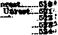

June 8, 1921, VoL II, No. 45
VSS Publithed every other I VAI week at 35 W yrtte Avenue,' WgJF Brooklyn, .V. T., P. S. A.
Ten Cents a Copy—52.00 a Year
Cmada *01 Foreign Countries, |2.M
Tolum» 2
TVEDKagDAY, JUWB 8? 1M2-
Xmn»r»
CONTENTS<^Mi*GOIiI>^AG&
POUTICAIz-DOIHMmaANIVroRMGW
Gtaneiaa Backward'-at* , ^’CsHy*^............... g
■MHevtaa- and UnaaiELlH B«m- tor Tnrwfk..—...41 BMMBttfon and nnte»tu_® WkrrEmm and. mraMd rather and - Vnreatii—J»
,ax»tlMrs
. FtMaeteir nntrv
itweetlo,. ■ ■ „
S' LttootaP aa*
LABOWrAJHJ>ECa»roMJ€»
stsraSKWrAWiiXvWrtbSf;
•. swStartrodSttvCT- m«B»—-..._—. . - ' - .... - nMB-
HonsswtHW AXtP HraiBW
DMUMcea and- Fyorrbea* aa<“ TWtbj^MlF*a- OnM> ot»
Rm<aox‘AN»>pfliiJos<)i»Hr'
S6* Lord-t Praytr:. Advanced Bible Stn Tba PemMrion of
Mia-'
■aw Sia
(■
Or WOODWORTH. HtTOOtWCS *M >**®PN
WB F. HUDC1NGS......S«r»
Ten Cbhts a Coft — $2.00 a Tea* roaatcs orricM: British: jC” wn Terrace, Lancaster Gate, London W. 2; Canadians 270 DHn,]?3_4®J'.
Toronto, Ontario: Anrtralariait. S'33 CoHinr St., Melbourne, Australia. Make remittances to The Golden Affe. Personal cheeks not accepted.
Volume II Brooklyn, N. Y., Wednesday, June 8, 1921 Number 4S
100KING over the literature of the past two years one is astonished to see how much was said on the subject of unrest a year or two ago and liow little is said today. Either there were forces then at work to produce unrest that are not now at work, or reasons then existed for playing this subject up in great headlines that do not now exist. We examine the subject with a view to ascertaining some of the basic facts.
A first glance at the subject reveals the economic situation as the fundamental cause of i all the unrest. The causes assigned for it are insufficient wages, fear of poverty, fear of loss of employment, excessive hours of labor, reluctance to work too hard for fear of working one’s self out of a job, inequitable wage schedules, lack of adequate housing, extortionate rents, profiteering in the necessities of life, high . infant mortality, ignorance, restriction of free speech by those who would complain of any of the foregoing. So much for the workers’ side of the problem.
On the other side of the problem the causes alleged are the lack of contact between employer and employe, the employer’s disregard of human suffering, his mad desire to get rich quickly, his spectacular profits, his love of display*, his bowing down to the demon of speed and his break-down in character structure as respects his relations to the opposite sex. We oannot hope to treat all of these subjects in this article, but will glance at some of them and touch others not yet mentioned.
IT IS all very- well for people to run around during war time and proclaim it as the greatest of all uplifters, but every person engaged in distributing that kind of information knows in his heart that there is not a word of truth in it. Every great war is followed by a period of social unrest and the greater the war the greater the unrest which follows it.
War dislocates the avenues of production and trade, overturns all industrial habits, upsets all routines, upsets all values, removes all standards of work and living and takes the most efficient and capable workers away from their tasks altogether. 11 , disintegrates families, wrecks tlie morals of both men and women, glorifies murder and is a school for brutality of thought and conduct.
After a great war the nerves of men and women are worn out and they are more ready than ever before to find fault and to take offense. They are impatient of all restraint, quarrelsome and prone to snap judgment. The disbandment of the armies floods the labor market inmiediately, and inevitably brings on labor troubles.
War is the harvest time of profiteers; it is the time of the ruin of myriads of young men and women; it is a time when marriage vows are not respected; it is a time when men live with other then’s wives and women live with other women's husbands. Family life is broken up for years. During the World War there were thousands of instances where the husbands were away from home for five years and while they were gone the modern dances and the automobiles of those that reveled in the profits at home made ruin out of their domestic relations.
- Do you wish to know why you could not pick up a “ne'ws” paper two years ago without finding the word “Bolshevism" in every column and now you rarely see the word at all! We will tell you. The profiteers had made from the blood and tears of Europe such fortunes as were never before heard of on earth; they wanted to keep these fortunes; the common
people must not use them to pay the eost of the war; they must not itse them to-- lighten the-bnrdens pilefl upon them ami their children.
Bolshevism and Unrest
THE thing to do was to start a great hue and cry against thieves in Russia, so that nobody would dare cry out against the.thieves in-the United States. But just as soon as the Supreme Court decided that the profiteers cnuld keep all they stole during the war, awl that those who had been actually found guilty of violating the Lever Act should have their lines returned to them, there was no necessity to cry' “Bolshevism" longer and the •'news” papers stopped talking about the danger of it in the United States—of which there never has'been the least danger up to this writing. -
Bolshevism cannot come in any land where the masses of the people own property, hut it can come in a laud where the common people are robbed thoroughly enough and persistently enough so that they have, as they think, nothing’ to lose and everything to gain.by attempting’ the impracticable scheme of communism. Communism has lieen tried a good many times in the last one hundred and fifty years ami has never worked and cannot work while human nature is what it now is.
It was tried in the early church, the most likely place in the world for it to succeed, and even the warmth of early Christianity was not sufficient to bring it to perfection. In the Middle Ages it was tried by the Franciscans and the Brothers of the Common Lot; later by the Shakers, Oneida Community and Harmony Society.
In America the Pilgrim fathers tried communism but abandoned it after four years, saying, by way of explanation:
“This i-omnnniitie (so fan- as it was) was found to breed much confusion and discontent, and retard much iniployment'that would have lieen to their benefite and eomfoHe. For the youg men that wer not able and fitte for labour and service djd repine that they should spend their time anil streingth to worke for other men’s wives and children, without any recompenee. And for men’s wives to be commanded to doe service for other men, as dressing ffieir meats, washing their cloaths. etc., rhey deputed it a kind of slaverie, neither eotdd many Ipivhands well hrooke it.”
Communism, in the form in which it is practised in. Russia, is not extending into Ronmania, Servia, Bulgaria and Greece, ami there is a
reason for it. Those countries, although they are , i near tn Russia, are mainly agricultural eoun-tries,' ami as the peasants have all the land j they need in order to support their families they have no incentive toward Bolshevism. 3
There is more danger of the spread of it to
rhis is as high as 85 percent. These workers
are segregated into racial groups.and it takes ( ‘ some time before they accumulate property and learn American ways and-customs. It was this J condition that was taken advantage of, after 1 the war. by those who had lieen ami were profi- ’ teering. They spread far ami wide the lielief ■
that these workers were trying to seize tlio j
country; and in the reign of terror which followed,. America was treated to such a spectacle of abuse of innocent foreigners as was never j before witnessed on these shores. ;
Excuses for Unrest -
M LL kinds of excuses were invented to ae mint i for the “unrest” which was laid at the doom ) of these allegofl Bolslievists. Brigadier General ■ Georg*' II. Harries solemnly declared his belief at Atlantic City that the unrest was entirely due ) to German propaganda. Bernard Nolan,, president of a Pressmen's Union, declared it was due- , to anarchists working among the printers, and ) a United States federal judge declared from the J liench that it was partially Imancvd ami man- i aged by the federal government itself.
It was claimed by some that all the “unrest” ’ , among the workers was due to foreign agitators | ami then Arthur Woods-, former- Police Commissioner of New York City, threw some light • : on the situation when he said in an address at | Harvard: “Agitators are thoroughly wholesome . things, and unrest is a thoroughly wholesome state of mind. If we don't have unrest, if we 1 don't agitate for letter things, if there is not .a wholesome discontent, we shall not make prog- .' ress. Discontent is nothing in a. certain senna but another word for ambition, and if we have : not ambition we don't get far.” j
The epithet “Bolshevist” was bandied around | pretty freely a year or two ago by those, who - J wanted to cover up their profiteering or in other | ways- parade a bogus patriotism. In Winnipeg 3 where, during the war, Rev. Gordon distinguish- > ?
ed himself by the teaching that any soldier who died in the World War, dressed in the uniform of King George, was sure of going to heaven, no matter what kind of private life lie ha 1 led, the soldiers who, after the war, were working ten hours a day without any chance for recreation, were called Bolshevists for attempting to improve their condition. The chasm between a dead saint and a living Bolshevist is only such a chasm as can be made by a bullet penetrating a few inches of flesh. If you get the • ■ bullet you are a saint; if not, a Bolshevist. Now then, three cheers— for what’
VAST fortunes have been made in America in the liquor business. Many great fortunes in Boston and elsewhere, supposedly made in the “East India Trade ’, were really made by taking cargoes of rum to Africa, with which to debauch the natives, and the return cargo was a -argo of slaves, for the cotton and tobacco fields of the South. And long after the slave traffic was a thing of the past other great for, tunes were made by selling poisonous mixtures the immediate effect of which was to destroy the reason, will and physical health of the men of America and to ruin the happiness of their homes. •
Some attempt has been made by the holders of these fortunes, and their successors, to show that unrest has been due to prohibition. It has been seriously charged that by )\ moving from the brains of the workers that deadener of all the finer faculties, alcohol, they have become thinkers and that it is perilous to “sassiety" for the workers to think. "Theirs not to reason why; theirs but to do and die.”
Others have argued that it has been very evident to the poor that prohibition is prohibition for the poor but not prohibition for the rich, because iiyllionaires have their cellars full of wines and may drink as much as they like,'and that this sense of the inequalities of things has had to do with creating unrest.
Still others, of a more practical turn of mind, avoiding all kheSe superficial reasons tending to show that-prohibition causes unrest, have pointed specifically to the evidence that prohibition has injured the business of the nation for the reason that just at the time when the farmers were praying for cars to save their grain
...................---------...............................■
it developed that there were sixteeja hundred empty box cars held on sidings at Louisville, Kentucky, awaiting a grand rush of whiskey to market in all corners of the country if the' President had removed the ban from liquur, as it wtts at that time hoped that he would do.
rpHERE was a time when it was a statutory offense to increase a workingman’s wages above a certain amount, when a workingman could be put in jail for owing a storekeeper ten cents, and when a good mechanic received but fifty cents a day, and could buy but little more for the fifty cents than he can buy today. Times have changed.
The war acted as a tonic to wage-earners all over the world. They were led to believe that the war was their war, fought in their behalf, at their expense, and with their bodies in the . front line trenches, protecting the civilization that was at stake. They were encouraged to believe that after the war labor would no longer be treated as a commodity, to be engaged as low as possible and worked,as many hours as possible; they were assured that Big Business would see to it that the Golden Rule would be applied to those who had saved their necks.
President Wilson said that after the war, “There must be a genuine democratization- of industry, based on a full recognition of the right of those who work, in whatever rank, to participate in some organic way in every decision which directly affects their welfare or the part they are to play in industry". Of course, nothing was changed; there was no more democracy than before the war; the men have been gradually dropped from the payrolls and their wages reduced.
The steel trust raised wages eight times during the war, in an effort to keep the wages of the men on a par with the ever rising cost of living — a difficult job. The workers in that' Industry made an effort to deal with Mr. Gary, its President, through the medium of a labor leader who viewed the twelve-hour day ami the seven-day week as a thing abhorrent. Judge Gary would have nothing to do with him and was cheered to the echo by fifteen hundred members of the American Iron and Steel Institute when he declared his determination to run his great business in his own way. The inhuman
■ . . . ■■
- ' . ‘ ' '"4
' * - sr* it-
hours of work still prevail, but the wages are coming down. Nails are still ten cents a pound, which is twice what they ought to l>e.
There are three hundred thousand men on the steel trust’s payrolls, and these men could easily do in eight hours all the work they do in twelve, if a means could be found to convince them that it would not reduce their earnings or result in their loss of employment As it is there is a well-settled code among them to do about as little as they conveniently can. The same conditions are to I>e found in many other industries.
After the war it was difficult for the soldiers to get back at their old tasks. As business gets better and better, organized workmen find less and less of interest in their work and find the tasks more and more monotonous. Standardizing is essential to enable quantity production at low cost, but it is unpopular with the workers and a fruitful cause of strikes.. The strike may have something else as its pretext, but the chance to get away from a monotonous task for a few days is one that is very agreeable to many workers. The unrest was greatest in the smaller cities.
There were others than factory workers who were dissatisfied. College professors were in the same class. If it were not such a serious matter one would be almost tempted to smile at the information gravely set before the Association of American Colleges by Dr. George L. McIntosh, professor of Wabash College, when he said:
"A great deal of the spirit of unrest and expressions of radicalism through the country might never have existed if people had seen to it that teachers in schools and colleges were given reasonable salaries”.
The unrest has been as great or greater in England than in America. Few can estimate the terrible blow that England received during the war. Tin1 workers are better organized and more^determined there than anywhere else in the world. For a year past the workers in Great Britain have been limiting output, believing it the only way that loss of employment could be staved ^1T, and, the manufacturers have been friendly to the idea because it seemed to them the only^way that they could maintain prices. Lord Leverhulme, one of England's self-made men, and a truly great mhn, has proposed higher speeds at the factory, and more hours of
leisure for the workers, as a cure for unrest. In his own great soap business he has demon- ? strafed tliat six hours is sufficient for a day’s wort .
It is less than a year since the French govern?- ! inent made a practice of closing all the hotels and restaurants early in the evening, by curfew law, so that the workers would not be greeted with the spectaele of the new rich going home • i in their automobiles at the same hour that the workers were rising to go about their daily toil.
Profiteers and Unrest ' . * i
PROFITEERS always fatten in time of war, and when war is over it is always their wish , that scarcity and high prices shall continue evermore. When it was seen that the United States would surely enter the war a band of earnest and honest men in New York besought the i President to have a law passed strictly limiting the profits in all lines of business to ftie legal rate of interest.
None of the patriots who had inunitions of I war to sell would agree to anything of the kind and the matter received virtually no publicity, but it would have saved hundreds of millions- i of dollars and endless discontent, for there is no doubt that the unbridled greed and ba-efaced robbery of the war time was the greatest of all 3 real causes of unrest. %
At the same time that girls in Quebec cotton factories were working ten hours a day, the owners of the factories were being paid in an- . I nual dividends one and one-half times the total cost of their entire plants. One Lancashire cotton factory that made $40,000 a year in | profits before the war cleared fifty times as much in the year 1919. ,
America is blessed with food pirates that delight in publishing books telling how small ’ their profits are on sales, but the books do not contain the self-evident information that if you . can turn yonr money over at two percent profit every ten days you can clear seventy-three per- , cent a year on your investment; nor do they go ,,4 into details about the quantities of food con- -4 signed to incinerators rather than reduce the price to the people. They do- not dilate on the cargoes of fish, the carloads of onions and train- J loads of other foods which are destroyed rather than give the people cheap food.
When a merchant or a manufacturer makes more than a fair percentage of profit the excess •: is deducted from the earnings of workers and the buying power of the workers is necessarily’ lowered, along with their standard of living. All the excess profits of the profiteers and prodigals must be paid for in hard work by the real producers. The Kaiser is not the only culprit that was guilty of bringing on the war, or of encouraging it, that is living on the fat of the Lind. Among the profiteers is many a Kaiser.
The war has been the opportunity for Big .business to crush little business. Big Business ■, as kept measurably independent of labor •anions in the United States; hence the labor unions have made their greatest exactions from the smaller businesses, the ones that were least fitted to bear the strain. The smaller businesses and the labor unions are going down together, and the banks are greasing the toboggan for their exit. The slogan of the banks now is, “No money to loan to any concern that employs exclusively union labor”.
Henri Barbusse, the great French writer, in an article in The World Tomorrow writes of ‘‘the leaders and the profiteers of the multitudes , they divide, men whom an almost supernatural prestige has permitted until now to do evil on the grand scale, crushing out the life of the people in excessive hours of labor and in secret . misery, driving them a‘ the last to early and sacrificial death by battle and blockade”. If Henri had said such things as this in America during the reign of the late emperor he would have been deported as an undesirable alien, sure.
. Vice President Coolidge has offered six items of advice on how to cure unrest. The first and most important of these touches the vital spot. He urges America and the world to “abandon the mad scramble for money and get back to the Plymouth rock standard of believing that ‘to do something for some one else’ is better than to accumulate wealth".
One cause of excessive prices is that during the why goods were bought from the United States by foreign buyers without thought of price, and were sold without any regard as to whether or not supplies were left in America. This created a real shortage and the law of supply and demand operated to bring about a reign of extremely high prices. But there have been, here and there, splendid examples of men unwilling to take advantage of their fellow men to seize all the profits within their reach; splendid men, these.
The world never has more than about two .
yrears supply of goods on hand and. for five ■< years it was the business of the greatest pro-
during nations of earth to destroy instead of -
to produce. This diverted trade out of its . ■ accustomed channels to such an extent that America was almost drained of supplies to fill s the gap. ' ‘ . •
Thus, America’s trade with Japan in the year
after the war was nine times the trade in the s
year before the war; with China four and one- , half times as much, with India seven times as much, with Hongkong twice as much, with the Philippines three times as much, with the
Straits Settlements four times as much and « with the Dutch East Indies twelve times as
In other words, in the determined opinion of American Big Business, the American work-
ingman must come down to the European level of living, except in so far as superior machinery and larger output per man may enable a higher standard to be maintained. If not, America’s shops will remain idle, or partly idle. Hence ,
the determined effort at deflation. Meantime the employers are not at all averse to having a few unemployed workmen standing about.
Financiers and Unrest
INANUIEBS are not necessarily profiteers.
Finaiic. under present conditions, is just
as legitimate and praiseworthy an occupation as plowing or blacksmithing. Not infrequently ’ the days are as long and the fatigue is as great and sometimes, but not often, the rewards are .
not commensurate with the effort put forth. '
Financiers are proverbially cautious, timid, fearful. Ralph Waldo Emerson voiced the reason for that fear in language that is calculated to make men think and shudder. He said:
“Fear is an instructor of great sagacity, and the herald of all -revolutions. One thing he always teaches, that there is rottenness where he appears. He is a carrion . crow, and though you see not well what he hovers for, there is death somewhere. Our property is timid, our laws are timid, our cultivated classes are timid. Fear for ages has boded and mowed and gibbered over government and property. That obscene bird is not there for nothing. He indicates great wrongs which must be revised.”
>
I 1
I 1
r i
r i
1 t
I t
f
It was over a year ago that the great financiers of America decided that the time had coine to pirt an end to all the high hopes that had been created in the minds of the workers. The farm-era were to he tlmroughly deflated first, because they were not organized and could lie reached direetiy by the lianks. The laboa* unions were .to come, next: ahd the boding and mowing and gi.hl>eriug of tire mouth pieces of tlvese financiers . Iiegan at once, ere the plans for destroying the unions could be got under way.
In its issue of April 28, 1920*, the New York Time* said:
"ft is going to be a hard campaign to sav«’~Anierican institutions from the enemy within. There should be no discharge in this war which is to l>e won by ideas, not lv brute force. The Chinniter of Commerce of the United States will put into the field the first line troops nd reserves of !.:►<»<> trade and commercial organizations. They will Ite well supplied with ammunition in r.:e form of facts, logic and the lessons of experience. They will attack the strongholds of ignorance and fanaticism everywhere. Fundamental economies are to he talked from thousands of platforms. The American system of government is to Ite explained and illustrated in such a way as to silence detainers. The trail of the demagogue is to Ite followed anti his lies are to Ite nailed. Enemies of the government will Ite confronted ami e.x-jstsed wherever encountered. No rascal will Ite allowed to escape from public condemnation ami contempt.”
The history of the movement above outlined shows that its real object was to destroy the labor unions, nothing else, and that it had not the remotest intention of bringing to light the rascality manifested during the war. So far from bringing public condemnation ami contempt upon the thieves that robbed the people of the United States of billions of dollars in the construction of ships, the mismanagement of railroads, the supplying of rotten salmon, the destroying of needed food, and a thousand and one other things of equally atrocious nature, the men. that have done these things are in high bono^as industrial brigadiers and financial major generals in "the first line troops and reserves” whose business it is to explain to the misguided individuals who believed in the four-t«-en points’\vhat is the real "American system of government”. Stating it otherwise, the youth of the laird are to be instructed in honesty and good citizenship by the knights of the blackjack and the jimmy.
Hal H. Smith, Director of the Union Trust Company, Detroit, Michigan, in an address before the American Bankers’ Association, held at St. Louis, commenting on the same plan as discussed in the New York Times said:
"This is not the time for the old conservative liauker who earned that name by sacrificing everything to his profit and loss account. This is the time for a new anil audacious l'auker who looks beyond the daily lialance sheet to the fundamentals of life; who is prepared for sacrifice ns are the employers and manufacturers wlvo may lose their industrial existence in defense of the principle of free employment. It was heartrending to read Mr. Morgan’s message to Judge Gary demonstrating that one house, at least, approved his stand. How much mon* heartening it would be if other luniks could recognize that the strike at the Steel Corporation is a blow at every bank, and could pledge to it their support and could declare that wherever they saw the profiosal for tlie closed shop appearing they would immediately attempt to destroy it.”
lu other words, here is a proposition that the concern that falls in liue with tlie new program is to lie granted loans in time of need, with the evident suggestion that the concern that <loes not cooperate shall be led to the chopping block.
Occasionally a great financier has the courage — to see things as they are and to state them as they are. It is with not ajittle surprise and satisfaction that one reads in times like these such words as the following, from the pen of Rudolph Spreckels, millionaire president of the First National Bank of California:
■‘Congress is coutimially asked to protect capital and its methods of high finance. Protection and opportunity to i-or.tinue win nings upon their wati'rod securities while human beings starve, are demanded by men who know not hunger or want. Let not the spark of human kindness die'in America. We must not tolerate a continuation of commercial greed and the placing of dollars above human rights and needs. Etiro[>e is demonstrating today the inevitable result the policy of commercial greed leads to. The toll in money and in human life now being paid ar the altar of governmental submission to the demands of capitalism should lie a warning that no intelligent American can afford to ignore.”
It is too bad that the Federal Reserve Bank, that was organized to give the public a square deal, did not have some of the breadth of vision of Mr. Spreekels. Its action in boosting the interest rate to meinlter banks from four to six percent was the occasion for the maddest scramble for usury that the financiers of America have ever engaged in. It amounted in effect to a repudiation of a portion of the United Slates bonds, and. placed the Federal Reserve hi a conspicuous position among first-rank profiteers.
The argument is advanced that the possession of wealth has nothing to do with unrest, because thirty pereent of the world’s wealth is in the United States (a country which occupies only seven percent of the earth's surface and has but t-ix percent of its population) and yet there' is more restlessness and discontent here than in airy other country. This argument is only half stated. The wealthy here are too wealthy and the poor are too poor. •
Not a capital in Europe ran equal such luxury ns is to be found in the hotels and ball rooms of New York City and nowlrrre in the world is there to be seen swh a display of wealth as one ' may see on any line day on Riverside Drive, r’or five cents one can go from these scenes to habitations owned by the millionaire Trinity Church corporation where thousands of humah beings are huddled in quarters that are only tit for swine to occupy.'
ex at Barbvs.se, in the article to which we have already alluded on page 519, said:
“Up till today the human race has lived according to laws which have embodied in many different forms _ the principle of the slavery of the crowd. Never has
' the simple right pf every human being to life and
happiness been truly respected. The ordinary man is no better off in these modern times than he was in the days of antiquity or in the Middle Ages. The multitudes, in pence time or in war. are only a herd of social nonentities. Their real interests have never been con-• idered. Rendered helpless by the forces opposed to
them and by their own ignorance, dazzled or fooled by the ruling powers, the common people in all countries hnyc had no part, and still have no part in the shaping anxb settling of great historic questions, though they themselves may have provided the means of settlement.
. The whole series of tragic events which we call history is for fins. most part a spectacle of a vast injustice and a vast absurdity. Nothing real is changed by merely t changing words. Only verbally have slavery and servi-Hide been abolished, and the privileges of birth. The life of the world is ceaselessly exploited and sacrificed by an oligaVehy V’hich seeks only its own narrow selfish i interests. This is the basis on which our present social order is built, a system which is an organized and continuous assault upon all truth and goodness.”
It should lie understood that this is the view of a Frenchman, and even if we eould not endorse all of his expressions no one can deny that there is much tpith in what he says and that his views are shared by an increasing number of bis fellow men. In itself it is an impeachment of ail governments of the earth as instruments of deceit and craelty. This would not mean that governments have no good in them, hut that they are not as good as1 they pretend to be and their real motives are not the motives they proclaim loudest.
During the time of the war the United States government passed the Lever Act, to keep profiteers in cheek. It was distinctly understood and agreed at the time of the passage of this act that it would not be used against the workers, but it was used against them, and that was the only effective use that ever was made of the act.
Among the war measures was one which forbade trading with the enemy, and yet, while the country was technically at war with Germany the Government's own Shipping Board was dealing with German shipping companies for the taking over of former German trade routes, docks and harbor facilities. Many have the impression that in matters of this kind the government is an exception and can do what it will. Such is not the case. The government is obligated to abide hy the laws which the people have passed for their own protection, and when the government does not abide by those laws it is teaching anarchy in the most effective way in its power. Throughout the war the laws of the country, and particularly its highest law, the Constitution of the United States, was disregarded and held in contempt by the very highest officers of the land. This was a real cause of.unrest and this unrest is quieting down now that some of these officers have been displaced by saner and more law-abiding men.
"While the lawlessness at Washington was at its height, Edward T. Devine issued an address -to the president imploring him to return to law and order, in the following language, and it is a remarkable thing that such words should have received so little notice from those self-advertised “Palladiums of American Liberty'”, the "news" papers. ’
“Let all those who have grievances be openly invited to voice them. lx?t President Wilson and every governor and every mayor designate great public meeting places — in halls anti in public parks—where the freely chosen repri>»ei!t:itiveH of every group may express their views. Let the H’cre.t service men attend, not to find victims. for prosecution, but to catch the faintest whisper of a just complaint. Let legislative assemblies give patient hearing to delegates who edme to them from such assemblies. Let grand juries weigh their complaints, whether against individuals or against any existing abuse which mightAe remedied. Let the industries be represented by their detectives, not to spot agitators to discharge them, but to make careful note of any bad praetic' s which might«be reformed. Let radical journals lie published freely and let courts, prosecutors, legislators and. executives study them anxiously to see what evidence they may possibly present of crimes which they may have overlooked. Let ns make it the greatest offense against morals and manners to refuse respectful hearing to those who speak in the name of a more perfect justice, in the name of a better social order/’
■ It is well known that the great war in Europe would not have happened at all if it had not been for the governments. The people did not want the war and could hardly have been driven into it ut less their passions had been artificially roused and educated by governmental propaganda that was carefully prepared by experts in the art of lying. .
Governments, since the war, have been able to accomplish hut a small fraction of the things promised in the way of better housing and decrease of living expenses and it is hard to see how they can do so. It was the governments that inflated the currency so that all values have become upset. To be sure, they had to do it in order to pay their bills.
One of the things that brought unrest in the United States was the spectacle of the ease with which a United States senator could buy his way into that august body and the ease with which the whole matter could lie glossed over and hushed up. It is on a par with the government of Great Britain taking into the cabinet a man who had openly armed a great body of men and threatened a civil war unless he could have his own way regarding affairs in the North of Ireland. Such acts teach lessons in lawlessness to millions.
Since, the war there seems to have been a great movement of governments toward the extremes of imperialism on the one hand or Bolshevism5',on the other, leaving the common man in-much the same frame of mind as a fire victim on the roof of a huge wooden hotel. The flames are all around him. Escape is cut off. He must take a choice between a ten-story jump to the granite paving stones of imperialism, or take a chance on riding to safety when the seething volcano of Bolshevism comes down to earth. Call tire hotel Civilization and we have the picture.
Since the war, in Hungary, under the League of Nation s imperialistic regime, five thousand Socialists were murdered in cold blood and forty -six thousand men and women were thrown info prison and internment camps. Pogroms were inaugurated against the Jews and flogging was set up as a common punishment for petty offenses. This was all done to establish again au imperialistic regime in that war-ridden land. If living in Hungary would you choose to line up with the ones engaged iu the flogging of women (we did some of that in the United States, in prisons iu the southern states within the past five years) or would you rather be flogged? There is small chance of a choice. Liberty and justice are anathema where imperialism lifts its head.
It would seem as though there are some ‘drugs thr.t the government could still do for the w< Ifate of the common people. For example, it could take over a few railroads that are not paying and run them in competition with all other railroads. It could take over a few mines and a few factories and a number of farms and it might learn something of advantage to the common people. Such things have heen done elsewhere and have assisted in keeping the feet of profiteers on solid ground. •
odeut Blatchl-oud, in the London Clarion, uttered a great truth when he said:
"We’ shall never reach the happiness the king desires for us until we have civilized our religious leaders. Roman Catholics and Protestants both profess to be Christians, but they have hated each other and persecuted each other in a most un-Christian way for centuries." _
Mr. Blatchford’s statement would have been more accurate had he said, KWe shall never read’ll the happiness the king desires for us until we have converted our religious leaders and made Christians out of them”. The world is filled with so-called religion which is not religion at all, not Christianity at all; it is merely organized hypocrisy.
During the war the so-called religious teachers vied with one another in teaching multitudes the antithesis of Christian principle and did it
in the name of God. Men were taught to kill who, before then, even if criminals, abhorred the idea of killing. Criminals were released from prison upon their promise that they would go forth to kill, and men of Christian principle who refused to kill under any circumstances were put into the cells they vacated, and all in the name of religion.
The Literary Digest comes out tvith a proposition that ministers of the gospel should work for a living during the week the same as other people, and the idea is a good one. More particularly it is a good one because, according to Dr. W. E. Biederwolf, of Chicago, in an address before the world’s sunday school congress at Tokio, in October last, twenty-five percent of the ministers of America have gotten so far away from real religion that they do not now maintain family worship in their own- homes. And if they no longer know how to worship God in their own homes, how can they hope to teach others to worship Him in any other place 1
Dr. Len G. Broughton, in an address at the Atlanta Baptist Tabernacle, has given voice to the -thought that the time has now come for professed ministers of Christ to speak right out in meeting and tell the truth. They should have been doing that all along, and not wait for the Bible students to drive them into it. But hear Dr. Broughton:
“We went in to save our necks. We couldn't keep out of it. But this should not blind us to the fact that this war, like all wars, was the result of commercial greed. And we wore not innocent of this sin. Look at the war. What nation is now better off than it was before the war? The world is worse off than before. When they stuck us preachers up on dry goods boxes to sell Liberty Bonds and Red Cross we should have told the truth. We and the church have sinned.”
Dr. Broughton is too late. The world at large knows that the professed ministers of the gospel are always on the side of the Devil in time of war and it has caused millions of people to lose all confidence in them. Emil Vandevelde, Chairman of the International Socialist Bureau, writing on this point says:
“Slowly but surely with the irresistible movement of a geological, subsidence, faith is waning among the international ^or'nks and even among peasants. One may safely assert^that about twenty years ago nearly every one held to some religious creed. Today the workmen who follow no particular creed number millions, and as their hopes of a heavenly kingdom dissolve, other hopes assert themselves with a growing intensity.”
Leslie's Weekly made a valuable contribution _ to this subject when it said:
“All previous civilizations have perished because they " -were built entirely on materialism, and the people of '
those bygone days were not blameworthy because they ?•
had not our light and knowledge. Our civilisation is in * . danger, because notwithstanding our 1900 years of. the ' « Christian faith, despite the fact that every intelligent . •'$ man knows that in the practical application of Christian ethics is the only solvent for the ills of humanity, we ■" have blundered along in our brutal individualism, in ‘ our detestable selfishness, and insisted op maintaining 1
the same basis as all the ideal dead civilizations which have preceded ours.” -
Education and Unrest
Dr. Nicholas Murray Butler, President of
Columbia University, in au address U Philadelphia, a year ago, attributed the unrest then so much discussed as due to education. This statement is the more remarkable when we recall that only a few years ago a question- » naire of the advanced 'students of Columbia • . University revealed the fact that only about * five percent of them, as'we recall it, were at that time willing to confess their belief in a ■ ■ * personal God. The Apostle tells us that such $ a belief is the beginning of all knowledge. “He that cometh unto God must believe that he is ¥
and that he is a rewarder of them that dili-
gently seek him.” We quote a few scattered sentences only of Dr. Butler's address:
“For between two hundred and three hundred years
the modern world has been in a state of intellectual upheaval. This upheaval has been constantly more widespread and more severe. The forces that lie behind it have profoundly affected the religious life and the ?
religious faith of the great masses of men, have shaken their confidence in age-old principles of private morals and of public policy and have left them blindly groping for guiding principles to take the place of those that have lost their hold. The fool who says in his heart, j
‘There is no God’, really means that there is no God
thereafter to be measured and dealt with in terms of -
his personal satisfaction. So it has come to pass that
after nearly two thousand years much of the world
resembles the Athens of St. Paul's time, in that it is
wholly given to idolatry; but in the modern case there
are as many idols as idol worshipers, and every such
idols, must be broken up and destroyed, and the heart
and the mind of man brought back to a comprehension,
through faith, of the existence and the working of the divine spirit as revealed in Jesus ChriT.’TA b.nzv ending of a good sentence]
F ALL the ridiculous reasons that have been assigned as causes for the world’s unrest, nothing has been quite as ridiculous as the propaganda P.’-nnced by Henry Ford which makes the Jev. ■ of the world, responsible for the French Revolution and everything that has happened since in Socialism, Bolshevism, Freemasonry and Sinn Feinism.
The American Jewish Committee has answered these charges in a little pamphlet from which we extract the following items:
“During the war. by ,eervt agencies, a document variously called ‘The Procotols of the Elders of Zion’, "The Protocols of the Alec-tings of the Zionist Men of Wisdom,’ and 'The Protocols of the Wise Men of Zion,’ was clandestinely circulated, in typewritten form, among public officials and carefully selected civilians, for the purpose of giving rise to the belief that the Jews, in conjunction with Freemasons, had been for centuries engaged in a conspiracy to produce revolution and anarchy by means of which they hoped to attain the control of the world by the establishment of some sort of desi>ctic rule.’’
"(1) The Protocols are a base forgery. There has never been an organization of Jews known as The Elders of Zion, or The Zionist Alen of Wisdom, or The Wise Alen of Zion, or bearing any other similar name. Thore has never existed a secret or other Jewish body organized for any puri>o.«* such as that implied in The Protocols. The Jewi.-h people have never dreamed of a Jewish dictatorship, of a destruction of religion, of an interference with industrial prosperity, or of an overthrow of civilization. The Jews have never conspired with the Freemasons, or with any other Ixjdy. for any purpose.”
•‘From the time of the de.-truction of the Temple at Jerusalem by Titus, the Jews have had no political state. For centuries they were forced to wander from land to land, to flee for refuge wherever they might find it against bitter persecution. They were pent up in gli'ltios, were deprived of even the shadow of civil or political rights, and were made the objects of every possible form of discrimination. It is little more than fifty years since the Jews of Western Europe became politically emancipated. Until the outbreak of the World WAr thb Jews of Eastern Europe, con.-tituting a majority-<tf all the Jews of the world, were not even permitted to exercise the rights of citizenship in lands where they and their ancestors had dwelt for generations. The great mass of the Jews were hampered in every way in their efforts to earn a livelihood. Far from de-iring to govern the world, they were content with the opportunity to live. Numerically they constitute less than one percent of the population of the earth ; ami more than one-half of them are on the verge of starvation. The suggestion that, in their feebleness, they have been planning in secret conclave to seize absolute power and to dominate the ninety-nine ]>er-cent of non-Jews upon th<* globe is a ridiculous-invention than which even madness can conjure nothing more preposterous.
‘"Where is the habitat of these so-called Elders of Zion, by whatever name they may be called? Who are these hidden sages? Whence do they come? What is the nature of their organization? The distributors of The Protocols arc silent on that subject. Whence come these pretended Protocols? TIurre have been various' versions. One Serge Nilus. of whose identity little is known, a Russian mystic and an ardent supporter of Czarism, claims to have received them in Bussin, in 1901, in manuscript form, from a Russian office-holder, who stated that the manuseript had been originally obtained by a lady, whose name is not given, and who, he said, obtained them in a mysterious way. In what language they were written is not stated. Where that manuscript now is does not appear.”
"The Protocols as published bear no signatures. The identity of the Zionist representatives by whom they are claimed to have been signed is left untold. The location of the main Zionist office and of the secret vaults from which The Protocols were secretly removed remains a secret. It is, however, a matter of history that the first Zionist Congress was publicly-held by the Jews who came from various parts of Europe for the purpose of considering the misery of their brethren in Eastern Europe and of enabling them to find shelter in' the Holy Land. Theodor Herzl was a distinguished journalist, a man of true nobility of character. He presided at the Congress, all of whose deliberations were held in the light of day. The insinuation that there was a thirty-third, or any other degree, of initiation in this organization is merely a malicious effort to bring the Jews into parallelism with the Freemasons and thus to subject them to all the fanciful and fantastic charges that have front time to time been laid nt the door of Freemasonry, oblivious of the fact that fifteen Presidents of the United States, including Washington, and many of the leading statesmen of Europe and America, have been members of that order.
•‘Nilus and his associates belonged to the Russian bureaucracy. In 1905, through the Black Hundreds, that body sought in every way to erush the Jews and to prevent the liberalization of the government. The time was propitious for the perpetration of a political forgery bv a government that habitually resorted to the employment of ai/ent* provocateurs, a government which only a few years later, against the protest of the enlightened clergy of the world, ineffectually sought to convict Mendel Beilin on the charge of ritual mu r tier. It is significant that one of his prosecutors has been active m distributing manuscript copies of The Protocols throughout the United States.
“Irrespective of this history, bristling with suspicion, an analysis of The Protocols shows that on their face thev are a fabrication and that they must have emanated from the bitter opponents of democracy. They are replete with cynical references to the French Revolution. and to the conceptions of liberty. etpiality and fraternity. They uphold privilege and autocracy. They belittle etluearion. TJiey condemn religious liberty. They assert that political freedom is an idea and not a fact, ami that the doctrine that a government is nothing but a steward of the |»*op1c is a mere phrase. These are the very doctrines that one would expect from the protagonists of autocracy. Nothing can be more foreign to Jewish thought and aspiration than these brutal theories of reaction. That the Jews, whose verv life frsis been a prayer for the blessings of lilierty .ami equality, should hold, them in contempt is unthinkable.”
“(?) The contention that the genuineness of The Protocols is established by the outbreak of Bolshevism in Russia twelve years after their publication, and that Bolshevism is a Jewish movement, is absurd in theory anti absolutely tintrue in fact. As well might it Is? said that a forged deed is genuine because twenty years after its date a relative of the person whose name is forged Is falsely charged with being a disturber of the peace.
“To say that the Jews are responsible for Bolshevism is a deliberate falsehood. The originators of Bolshevism were exclusively non-Jews. While it is true that there are Jews among tlie Bolshevists, notably Trotsky, they represent a small ‘fraction of the Jews and of the followers of Bolshevism. Leniue. who belonged to the Russian aristocracy ami has not a drop of Jewish Mood in liis veins, was the creator as lie has been the motive power of the Soviets. T< hicberin. who has conducted their foreign affairs. Bucharin. Krassin and Kalinin, all 11011-Jews, are, with la-nine, the brains of the Coni-nu.nist Party.”
“The leading anti-Bolshevist newspapers, which of necc-ssijv are published outside of Russia, have Jews upon their editorial staffs. An overwhelming majority of Russian Jews have been mined by the coercive measures of the Soviets. They have submitted to the confiscation' of their property and are undergoing un-speakahle^hardships. The Orthodox Jews, whose numbers preponderate, remaining loyal to the faith of their fathers, regard the Bolsheviks as the enemies of all religion, and therefore, hold the doctrines of Bolshevism in abhorrence. With comparatively few exceptions the Jews are looked upon by the Bolsheviks as belonging to the hated bourgeaisc and as favoring capitalism. The Zionists, who constitute a numerous and important element of the Jews of Rnsera, have been denounced by the Soviets as counter-revolutionary, and many of them have been east into prison and. threatened with death—Zionists, we repeat, who are the followers of Herzl.
“If tlie Jews are to be condemned because of a Troitsky, who has never in the slightest degree concerned himself with Judaism or the welfare of the Jews, then flu-re is not a people that has ever lived that might not with equal right be condemned because in -its membership there were men who are alleged to have advocated hateful doctrines. The Jew has traditionally stood for religion, law. order, the family, and the right of property. It is. rherefore, the height of cruelty to charge him with responsibility for Bolshevism, when its doctrines, should they prevail, would inevitably lead to the destruction of Judaism. It is especially a brutal charge when one considers till that the Jew has suffered from the oppressive nnd discriminatory laws of Russian autocracy." • .
TT WILL be conceded by all that there never has been such a time of trouble and unrest on earth a* now. Contributing to tins unrest are,namely, the World War, Bolshevism, prohilt- . ition, employing class and profiteers versus wage earners, disturbed condition of finance, unwholesome, unrighteous and selfish political conditions, organized apostate ecclesiasticism operating under the name of Christian religion hut in fact a faithless religion, the education of the masses. Judaism, etc. Yet there is a reason why these things have all come at the same time. .
Nearly nineteen hundred years ago Jesus of Nazareth was asked the ijnestion what would he the evidence of the end of the world and the approach of His kingdom. Had His answer been written yesterday it could not have been more . appropriate to the conditions. He said that at that time there would be “upon the earth distress of nations, wifh perplexity; the sea [masses of humanity] and the waves roaring; men’s hearts failing them for fear, and for looking after those things which are coining upon the earth: for the powers of heaven shall he shaken. And tlien shall they see tire Son of man coining in a eloud with power and great glory.”
The real reason why this general unrest in earth is so manifest is la-cause we have reached the end of the world. The old order is dead and is rapidly disintegrating. The prophet of Jehovah under inspiration wrote of this time, saying:
"There is a noise of tumult on the mountains [kingdoms, nations], like as of a great people; a tumultuous noise of the kingdoms of nations gathered together; the Lord of hosts mustereth the host of the battle. Wail ye; for the day of Jehovah is at hand: it shall come as a destruction from the Almighty. Therefore, all hands shall lieeome weak, and every mortal’s heart shall melt: and they shall be afraid: pangs and sorrows shall take hold of them; they shall have throes, as a woman that travaileth: they shall wonder every man at his neighbor; . . . . . and I will visit on the world its evil, and on the wicked their iniquity; and I will, cause the ar-roganey of the proud to cease, and the haughtiness of the tyrants will I humble. I will make a man more precious than fine gold; even a man than the golden wedge of Ophir. Therefore I will shake the heavens, and the earth shall be removed ont of her place, in the wrath of the Lord of hosts, in the dav of his fierce anger.”— Isaiah 13:1-13.
The Lord’s Prayer
"The day of vengeance is in mine heart, and rpiiE Lords prayer was given twice: once in J- Matthew 6:9, in the sermon on the mount; and once in Luke 11:2, when asked by His disciples, "Lord, teach us to pray”.
It appears to be a model or pattern for all other prayers as it is said: “After this manner pray ye”: and also a form to be used—“Whenever ye pray, say,” etc. As a model it is short (Ecclesiastes 5:2), simple, and condensed. It takes the ground of confidence. (1 John 4:14) It glorifies God. (Leviticus 10:3; John 14:13) It puts God’s glory before man’s needs.
There are seven petitions, the first three being marked by the word “thy” and the last four by the word “us”.
The difficulty with translating is that the more literal the less intelligible it becomes to the person^unfamiliar with the original, because of the peculiarities of the sentence structure and of word usage. Without going into extensive explanatory notes we offer the following as believed to convey the thought of the original with as slight a departure as possible from the familiar wording— which familiar wording, by
the year of my redeemed is come.” “It is the day of the Lord’s vengeance, and the year of recompenses for the controversy of Zion.”— Isaiah 63: 4; 34:8. ' -
That great and wise Christian, Pastor Russel’, many years ago, in his notable work, “Thu Battle of Armageddon,” foreshadowed th* present condition of unrest, set forth its cause and what would be the result.
Remedy
HERE is no human remedy that is in anywise sufficient or adequate. The only certain remedy and the one that will correct the present evils is the great kingdom of Messiah. Abour this the prophets prophesied four thousand years ago, and for nineteen hundred years Christians have been praying for its coming.
It is for this that ignorantly the whole creation has Idng been groaning and waiting— waiting for the manifestation of the sons o'f God, waiting for the kingdom which will crush out evil and which will bless and heal “all the families of the earth”.
the way, is not traceable to the Bible but to Anglicanlectionaries or formularies long in use when the Common Version was first issued:
Our Father In the heavens :
(I) Hallowed be thy name.
( 2) Thy kingdom come. -
(3) Thy will be done, as in heaven, so on arth.
This day
(4) Give us our manna* bread; “
(5) and forgive us our debts, as even we have forgiven our debtors;
(6) and bring us not into temptation r;
(7) but deliver us from the evil.
♦ Literally, “down coming” or “descending” bread. The allusion seems to be plainly to the ancient giving of the manna, the heaven-sent bread, or “bread from heaven”.
t The reference here is evidently to the “great tribulation” when the forces of the evil one will be particularly active and powerful.
THE housing of the worker in thi« eomituy will- have much to do with this country’s attitude towards the Avar question of the future. Without giving the cost adequate consideration, both government and people are committed to scores of schemes- that can only be called fantastic. Calculations of the need name a total-6f 800;0W homes. If a competent building company could be found to undertake the country's requirements, the building alone would average $4,000 for every small house. But as the contracts will be distributed, the cost will be a great deal more, while to this- will have to he added the cost of the land. Front time to time estimates are accepted from $4,000 to $0,000; When these houses are let,, if they are to fulfill their philanthropic purpose, not more than a hundred dollars a year can be charged. This will mean that the cost will never be repaid. All the money raised will cost 6 percent.—This will mean a charge on each house, exclusive of repairs aud taxes, of about $280 per annum. If the scheme is generally adopted, the loans will run to $4,000,000,000.
Turn to tl« stock lists, and you see the old “Goschens’’ that once stood at 100 now marked at 44 or 45. Is it any wonder, when vast sums can be invested in guaranteed stocks at high interest? European statesmen are made aware, by this condition of things, that the providing of the vitals of war <-au easier be supplied by eloquent politicians, fortified with whiskey, than by more prudent supporters having nothing save cheque books. Interviews with chequebook custodians will giv<- responsible politicians an extraordinary interest in peace. Let us hope that a faithful press will soon glow with their appeals. If the London County Council has been a long tim" in raising a portion of a housing loan„at a high interest, war-makers will ask themselves how long a thousand millions sterling. at a high rate of interest also, would require. -
\ t
Soup Kitchens and Profiteer"
TOLU ES are coming in. from all directions, of thousands of m n >mt of work, lined up in front of .-oup kitchens, literally doing what the profiteers a year ago said they would be,—
“eating oiit of the hands" of Big. Business,
In the same batch of information regarding the soup- kitchens eame- a circular letter of a concern in Cleveland, Ohio, which reads- in part as follows: ' '
■•An offi-r is extended to you to associate yourself with officials of the Crucible Steel Company. Before giving details, it will interest you to know that in 1914 Cun ible Steel common stock sold for $11.50 per share, lu 1920- tliis stock reached the remarkable price of $278.50 per share, showing a net profit to the purchaser of $2(>T.OO or over 2400 percent. The profits in colddrawn -tee! ai-e enormous. The rise in Crucible stock prows this- Figuring very conservatively, we should show a net profit the first year of operation of more than one million dollars, or over one hundred percent on all common stock.”
We are not encouraging anybody to invest in. • this Cleveland concern; at any rate we do not recommend it to any of the poor fellows that are Irniitg up in front of the soup kitchens, It-might make some of them warm to read about these profits, but it is not the kind of warmth that would do them any good. It is hoped by some that not too many of these soup-kitchen victims, that have been heroes of the front line ’ trenches and learned how to use cold-drawn steel iu the World War, .will get uncomfortably warm, and uncomfortably hungry at the samb time. How long [Big Business] Cataline, dost thou abuse our patience? How long dost thou conspire against the State? (Apologies to Cicero) .
Tax Memoranda/ By c. E. Steuart
HE taxes of tile average individual in Mim nesota are equal to the actual value of his property every forty or fifty years. In other words, a tax payer avill turn over to the State his entire holdings in real and personal property at least twice every hundred years.
A person living in St. Pau! owning an automobile will pay for state and city tax, together with moderate liability, fire and theft insurance, in the cheapest company, the price of his automobile every twelve years; and this, too, without turning a wheel, if only he is ready to make a trip.
The price of running a ear, in gasoline, oil and tires, of a very economical car, not a Ford, is six cents a mile. These are my »wn figures..
IN The Goldex A<e Number 29 we gave a review of Upton Sinclair's book, The Brass Check, showing why, among other things, a journal that tells the truth cannot hope to carry much profitable advertising. The Goldex Age has found this to be a fact,* and for that reason intends to discontinue all attempts to build up an advertising patronage.
But apparently we came near getting some advertising business recently; at least we feel that a delicate suggestion was offered to us that we might have some if we would just keep still and be good, like all the other publications, far and near, that have taken the same kind of paregoric.
It seems that in Mr. Sinclair’s book he made certain reflections upon the motives of Swift & Company in their advertising campaign in the year 1919, alleging, in effect, that they had spent a million dollars a month upon newspaper advertising, with the object of closing the mouths of the newspapers so that they would not give favorable publicity to a bill that was then up before Congress for regulating the packing industry.
In Golden Age Number 37, at their request, we printed a letter from Swift & Company respecting the size of their advertising appropriations, with a reply thereto by Mr. Sinclair, all of which we have no doubt our readers found interesting. Apparently Swift & Company thought that we did not intend to publish their letter; but they were wrong. Possibly they thought that we were bidding for some of their advertising; if so, again they were wrong. From our own point of view it was an incredible folly for them to have their advertising agents, the great J. Walter Thompson Company, of Chicago, write us, as they did, under date of February 19th, 1921, in the following language:
“Will you please have someone cheek your files for a copy of ad^tter which was mailed to you on December 22nd. 1920, from the Commercial Research Department of .Swift & Company, Union Stock Yards, Chicago, Illinois? The letter has been acknowledged and a promise made that it would be printed in The Goldex Age. We should appreciate your sending us clippings, or if the letter is not as yet in print, will you please let us know the date’of publication, so that we may write for a copy?’’
One can readily see that the effect of such a letter on some publishers would be to make them anticipate that a bending of their views io that of Swift & Company might conceivably result in their landing some advertising for hams, bacon, lard, soap, etc. Well! In this office the truth comes first, and so-called business success is the last consideration.
In due time Golden Age Number 37 reached Swift & Company; but for some reason or other they were dissatisfied, and we now have another letter from them which,at their request, we publish herewith. It is very interesting, as is also the article which follows it, from the pen of Senator George W. Norris of Nebraska. With the publication of these items we close this incident, as we do not wish to burden our readers with undue attention to one small item of the great drama now being played on the world’s stage. 7
SWIFT & COMPANY
CHICAGO
Commercial Research Department
March 8, 1921.
The Golden Age, 35 Myrtle Avenue, New York City.
Dear Sir:
We thank you for printing our letter of November 30th in the Golden Age of February 16th. We are sorry, however, that you apparently feel that our statement with regard to our advertising expenditure hns been sufficiently refuted by .Mr. Upton Sinclair’s letter of December 27th. ■
Mr. Sinclair quotes from the testimony of Mr. Francis J. Hency before the Senate Committee on Agriculture when he says that the accountants of the Federal Trade Commission had informed him that Swift & Company had been spending an average of one million dollars a month for advertising.
We fail to see how Mr. Heney, who had represented the Federal Trade Commission practically as a pro<e-cuting attorney, can be accepted as an authority on this subject. The statement in our letter of November 30th that our advertising has averaged for the three years 1918, 1919, and 1920, considerably less than two million dollars a year is correct. At uo time has our advertising expenditure approached anything like one million dollars a month. The facts with respect to the amount spent by Swift & Company on educational advertising were brought out in the same hearings referred to by Mr. Sinclair.
These facts referred to above were given in the following affidavit which Mr. Swift presented:
STATE OF ILLINOIS) gg.
COl'XTY OF COOK ) ' '
I. Arthur D. White, being first duly sworn i>ath. do depose and ssiy that I am employed by Swift & Co., ft corporation, Chicago, III., in rhe capacity of advertising manager; that the entire advertising expenditure of Switc & Co. for the fiscal year ending November 2. 1I)IS, was less than $l,T0O.iw. which is approximately fifteen one-hundredths of I percent on the volume of sales for'said year. •
That I am of the opinion that the attitude of the consumer toward the manufacturer of any product is a considerable factor in doTermining the purchase. The favorable attitude on the part of the buyer is an asset to the seller —and the constructive nature <>f the advertising done by Swift & Co. during V.»1t ;-’s been considered not oidy
from the standpoint of the publie having a lietter understanding of the fundamental facts of the business, but of creating a demand for Swift & Co.'s products.
That I am also of the opinion that all of the advertising of Swift & Co., of every nature, has assisted hi creating.a demand for Swift & Co.'s products.
Amiri D. White.
Subscribed and Sworn to before me this 20th day of January, A. 1919.
, _ Edgar B. Rismiller.
' Notary Public.
Mr. Sinclair begins his letter by wondering if the salaries of the Commercial Research Department are charged up to expenditures for advertising. These saiaries are not charged tip to advertising because a large part of the work of the department has nothing to do with this matter. Possibly part of the expenses might be charged to this account, although if the whole expense were charged to advertising it would make very little difference in ttie total. ,
As for Mr. Sinclair’s insinuation that conditions in the packing plants are unsanitary, we can only say that we invite inspection of our plants at any time. They are open to the public; thousands of visitors go through them every day, and everybody knows that they are clean and sanitary.
We shall be glad if this letter may also find a place in your columns.
Very tndv vours, '
' ' . SWIFT & COMPANY
Per L. D. H. Weld, Manager, , Commercial Uesearch Department.
■it
Sids Lights on the Packers By Senator Cjeorge W Norris of Nebraska (Printed in the Congressional Becobd, January 22, 1921)
ONE of the mt> remarkable attempts to control the public sentiment of the country through the instrumentality of the public press has been going on for the last three or four years. The packers are not the only corporations engaged in this great undertaking. There are many other great corporations that are equally guilty. It is a nation-wide campaign to build up a reactionary sentiment in favor of the great corporations of the country. But in this article we are dealing only with the packers, and I confine myself in my comments to the part which they- have taken in this colossal undertaking. I do not want to be understood " as claiming that all of this advertising was unnecessary or subject to criticism. Neither do 1 argue that liecause a newspaper accepts advertising it is necessarily controlled in its , editorial policy. The assertion is made, how-’ . - ever, that the advertising of the packers is far beyond any legitimate, fair, or even liberal allowance. for that purpose, and neither can < there be ahy doubt but that some newspapers F are controlled in their editorial policy by the advertising end of the business. .Many others • remain silent in their editorial columns when they would otherwise condemn, if it were not for the oiling of the business machinery through advertising.
There can be no doubt but that one of the objects of this campaign was to, mold public sentiment, and to close up the criticism that their acts would otherwise receive at the hands of newspapers. There was evidence developed upon the investigation to show that this was the real intent and purpose of a large portion of the advertising. The packers carry large page and half-page advertisements in all newspapers of the United States. No country paper was too small to be taken into consideration by them. Large display advertisements appeared in newspapers that had only two or three hundred subscribers. Moreover, the greatest of this advertising took place at a time when no advertising was needed in order to sell their products. It took place at a time when there was a shortage of production, when they were positively unable to supply the hungry with the food which-they desired.
I have searched hundreds of country new's-paners coming from the smallest villages and have never yet found a paper that was not patronized by the packers in the way of advertising. I have a’ copy of a small newspaper
published way out on the frontier, in a small country town, that contains a half-page advertisement, signed by all five of the great packers, in which they make common cause to demonstrate that it would be difficult, indeed, for the country to exist without them..
On February 28, 1918, Swift & €0. had a large display advertisement in practically all of the great newspapers of the United States, in which they devote the entire spaee to-a demonstration that the employes of Swift & Co. are patriotic. Nothing is said in it about anything for sale and nothing is said in regard to a defense of any of the charges made by the Federal Trade Commission; but for some reason they seem to lx* imbued with the idea that some one had charged their employes with being unpatriotic, and they rush into print, wrap themselves in tlie American flag, and proclaim their patriotism from the housetops. During the war this was a favorite pastime for all profiteers. When a big corporation was about to cut a melon or a few millionaires were about to rob the Government in some unconscionable contract, they always made an attempt to distract attention by parading in public under the Stars and Stripes. - .
For the year 1918 Swift & Co. alone spent over $l.fi‘X).OfX) for advertising, and Mr. Swift himself admitted that they would spend $2,500,-(XX) in the year lf>19. This would mean more than $2(M).(.W a month, about $7.tM)0 per day. Assuming that the other members of the ’Big Five' spend one half of what Swift & Co. spends, which everybody will admit is way below the actual fact, we find that the great packers on this basis spend i”ore than $8,500,000 annually for .idvrtising. This would be more than $1,090 for ('very hour of the 24.
This cost only includes what is actually paid the newspapers and magazines. To keep the machinery going and to employ the necessary i.’.eit^tn. prepare the advertisements entails an additional expense of enormous amounts.
For rhp la<t fifty years the packers have been . rowing in size, and as they have grown their disposition to avoid the law has increased with - their sirip. Ttjioy have been fined an innumerable number .yf times tor violation of the criminal statutes. Their attempt to control the prices of th'* country through their lavish expenditure of money is partially accounted for by their desire to conceal publicity of their transgressions. While they are fighting before a referee
in Chicago with their employes, who are seeking . 1
better working conditions, they are advertising t 1 in Minneapolis the alleged advanced sanitary m 'I conditions of their packing establishments. By J their utilization of newspaper space they are 1 making it physically impossible for newspapers, .j | even if they desired to do so, to give proper a
publicity to the cases where they have been
conventions where editors, particularly of farm
purpose of suppressing from the people a ’ knowledge of their, shortcomings. The editor ' of the Nebraska Farmer could undoubtedly tell of such an invitation that he recently received ; himself. • • '
On the 7th day of March, 1919, a Washington $ paper, on an inside page in a very inconspicu- j ous place, gave an account of the' trial and conviction of an agent of one of the ‘Big Five,’ who, in the city of Washington, had violated . j
the pure food law by selling catsup in original
packages which were short in actual measure-
meat. It was shown at the trial that the cans
of catsup were marked as containing 5 gallons
each, and that upon actual measurement they
were considerably short of that amount. One ' can was shown on actual measurement to be 2
quarts short. A third can was taken by. the officials and brought into court unopened, and * upon the trial of the ease the prosecution of- | fered to rest its entire case upon the unopened . J can. It was proposed that the can be opened < and that if it was full measure the prosecution . would be dismissed. . |
The great packing concern, however, declined | to accept this proposition. The result was that ; the agent making the sale was found guilty and
■ lie was fined the enormous sum of $10. It is fair
to assume that these cans were no exception
to the general rule, and that this great coi-por- \ ation had sold thousands, perhaps tens of thou-
sands, of these same cans, all of which were
undoubtedly short in measure. They had prob- . ■
ably violated the pure food law in every city -
1 :3
No one will probably ever know just how much money has been spent by the packers to control legislation, to appoint officials, and to deceive the public. It is doubtful whether packers themselves could give this information correctly. For instance, the books of Swift & Co. would nowhere show the payment of any salary to Mt. Logan.* There is no item anywhere which would indicate how much money was paid to ’Diamond T’.f It appears, for instance, ihat Mr. Veeder, the general attorney for Swift & Co., was paid $71,000 in one year; but he was drawing a salary of less than $25,000. While he was getting a salary of about $25,000, his expenses amounted to about $50,000. Air. Swift seemed to be unable to tell definitely just what Mr. Veeder’s salary was. He was tmable to tell why they paid him over $70,000 when he was getting a salary of less than $25,000.
Both Armour and Swift have packing plants at Fort Worth. Together they own the stock-yards at that place. The evidence discloses that they loaned money to a man by the name of Armstrong, in Fort Worth, for the purpose of :iJaying an interest in a daily paper there, which had been advocating the control and regulation by the Government of the meat-packing business. They considered the paper unfriendly. Both Armour and Swift loaned money to Mr. Armstrong. It is noticeable that after the money was loaned and Armstrong became a part owner the policy of'the paper changed. In writing to the packers for a renewal of the loan, Mr. Armstrong called attention in this letter to the fact that he had gone into the newspaper business to be of service to Air. Armour and Mr. Swift, and also called attention to the editorial policy of the paper ‘before and after taking’. It is unnecessary to say that he had no difficulty in getting an extension of his loan.
Tlig men who were running this paper, however, were not aware that their competitor, the other daily newspaper published at Fort Worth, was likewise having its machinery oiled by packer money. The president of Swift & Co. in a letter asked his attorney whether they had better comply with the request of this other paper for a ‘donation’ of $1,200, which should be given ostensibly in return for a ‘page devoted to hogs and hog raising’. In this letter Mr. Swift called his attention to the fact that Armour & Co. and the Stock Yards Co. of Fort Worth were each contributing like amounts. In addition to this, it seems that the editor of this paper was loaned $5,000 by Swift & Co. He did not pay his interest promptly, and Mr.
' Swift asked his attorney whether he thought it would antagonize this editor if he sent him a bill for the interest, saying that the editor also owed Armour & Co. a like amount and he had paid the interest. The attorney, however, asked Air. Swift not to present any bill for interest at that time, because they had some important litigation pending in Texas, and he thought it would not be wise to ask for the payment of interest from the editor until this litigation had been disposed of.
AVe approach the domain of the great packers as a little child would approach a giant. At every step we are impressed with their wonderful power, their inexhaustible resources, the infinite network of connection with the most powerful financial institutions of the country. Their paid emissaries are’ in every locality. They are secretly entrenched in politics, in all kinds of business, and in nearly all the activities of human endeavor. To carry out their ends they have all kinds of instrumentalities. They are equipped to go into the church, and are likewise prepared to send the bum into the saloon. They have an army of highly paid, useless employes, who can give no honorable reason for their packer connections. Their agents are at the meeting of every legislature and in the Capital City at Washington. Their control of human food is so great that expense is a secondary consideration. They know that, after ail, all these expenses are paid and all this machinery is oiled by the consumers of the country. If their expenses increase, they have but to lower the price that they pay to the producer, or increase the pri«-e that they charge the consumer, or Itoth.
[•A Washington “newspaper0 man, an intimate personal friend Of Joseph P. Tumulty, former Acting President of the United States, who was getting, for unknown services, f- tfiOO a month from Swift & Co., $300 u month from the
Standard kdl <\>. of New Jersey, $500 a month from the Standard qil Co. of Indiana, $70U a month from the At-lantlc Refining Co., S5UU a month from the Freeport Sulphur ' Co., and $500 a month from the General Electric Co. Mr. Logan's .service* to the interests seem to have l>een along the lines of giving them early notice of what the common people, through their legislators, were trying to do to prevent being swallowed alive by the financial giants now abroad in the land ]
[tTlie investigation by die Senate Committee on Agriculture disclosed the existence of n mysterious clinracter who was very valuable to the packers'in giving them advance information of possible legislation in Washington. This character was never designated by name. Wherever reference was made to him in the packers’ memoranda it was by a character drawn with pen and ink. This character was represented by the letter T Inclosed in a rectangular figure the shape of a diamond, but because the printer does not have any character that properly represents it the character is referred to as ‘Diamond T’. If this was some man close to the President, it was a stupid hieroglyph well worthy of the way the Commercial Research Department has handled this whole matter ]
[In view of the foregoing information with reference to members of Big Business carrying on a propaganda, ami as further evidence that Big Business, professional politicians and the apostate clergy work hand in glove together, the following extract from a letter written by Roger W. Babson, who is confidential adviser to Big Business, and who therefore speaks with authority, and which was published in The FedertirEmploye November 13, 1920, will be of interest, to wit:
“The war has taught the employing class the secret of the power of propaganda. Now when we have anything to sell to the American people we know how to sell it. We have learned. We have the schools We hare the pulpit. The employing class owns the press. There is practically no important paper in the United States but is theirs.”
This letter of Mr. Babson was not written for general information of the public; but somehow a copy got loose and was published.
The Chicago Daily Neit'.i recently refused to accept an advertisement for a public religious lecture to be delivered by the President of the International Bible Students Association, for the reason that the clergy object to the lecture. It is not in harmony with their so-called ortho--s dox views. This is also interesting in view of. the fact that Mr. Babson in the above letter-addressed to Big Business states: “We have the pulpit”. The refusal of certain newspapers to- publish great truths in which the public is interested cannot I** blamed at all on the reporters or altogether on the <-«litor. There are higher-ups who direct what shall he published; and when the clergy is owned by Big Business, as stated by Mr. Babson, they must be considered, and a Irone must thrown to the dogs to satisfy them (Isaiah 56:10, 11)', since they would prefer to have the truth throttled and go unpublished; Big Business, owner of the press, accedes to their demands, in consideration for spiritual (!) service rendered]
JOHN SWINTON, who for many years was chief of the editorial staff of the New York Tiinrs, and who is regarded as one of the most able journalists in the United States, wrote the following regarding Lincoln, whose birthday is now reverenced by a legal holiday:
"In 1SKO I reported Lincoln’s speech in Cooper’s Cnion. New York, and in 1894 I reported from the -ante hall rhe speech of Eugene V. Debs. As Lincoln stands in my memory, while looking* far hack, Debs -tands in it thirty-four years later as a parallel. Lincoln ' -jHikf for right and progress; so spoke Debs. Lincoln -poke for the freedom of labor; so spoke Debs. Lincoln was the foe of human slavery; and so is Debs. At that' rime (IshO) Lincoln was regarded by millions of peo-■ plc a< a cross between a crank and a monster. Tn hundreds of, papers and by hundreds of speakers he was called the ‘IWnois baboon’. Every epithet that hate could iurtut was applied to him; every base purpose that malice could conceive was imputed to him by speech and the press. Ry contrast, rhe Deb' of today is a harmless citizen compared with rhe Lincoln of
The aliove from a man who ranked with the
Debs By E. E. Cassel
late Colonal Watterson as Nestor in American journalism, is certainly a review of history worth while, and it also raises the question as to whether or not Debs will emerge from the wanton and delilierate attacks which fir i time to time have iieeu made upon him, just as is ' revealed in the ease of Lincoln. In Response to a toast to the alleged independent press, it was honest John Swinton who said:
“I ani paid a salary for keeping my honest opinions out of the paper I am connected with. The btieinesa of the journalist is to destroy the truth, to lie outright, to pervert, to vilify, to fawn at the feet of Mammon, and to sell his country and his race for his daily bread. We are the jumping jacks ; they pull the strings, and we dance. Onr talents, our possibilities, and our lives. are all the property of other men. We are intellectual prostitutes.”
The alrove from the pen of an honest top-, noteher shonld cause every person to investigate and deliberate before forming a fixed opin-- ion in favor of the press reports which are circulated today.
y ' T\URING the past few years, the value of research to almost all essential industries has been amply demonstrated. The. seieuti.i.-$ principles underlying and governing the work carried on in our gneat factories have been more and more faithfully applied: and in some ' instances cherished shibboleths have been ruth-'-lessly scrapped and cast aside, and applied
-s' science firmly established. One could cite many advances made in the non-ferrous (non-iron) industries, many of which are atted with that section dealing with the electro-deposition of metals. ' •
The problems of corrosion are responsible for much research into, and advances made in the electro-plating and deposition of such elements as zinc, tin and nickel. Further, our engineering industries should materially benefit by the discovery of a nieaii” of depositing iron to almost any thickness, which can be case hardened. The enormous value of this will be obvi-<nts when one recalls the large number of ex-r pensive-machined replacements worn in only a small section, ••specially in the motor industry. War-time necessity compelled scientific investi-. gation in this matter, to replace expensive internal gun-mechanisms.
World-wide i .-sity. interest and concentration have resulted in many improvements being made in the general art of the deposition of metals. The enormous amount of war re. search work done by many investigators in this • connection, has brought to light many ideas which will doubtless be developed from time to - time.
The more expensive metals, gold and silver, howevfir, have not come into the limelight so much for obvious reasons, but much infornia-tion obtained when working on other metals will most assuredly be applicable to them.
t During certain investigations on the structures of silver deposits, the writer observed . • ' that in certain instances very fine deposits were obtained at an extraordinarily rapid rate. Further investigHtion revealed the fact that it was to a large extent due to the presence of a compound which was not looked upon with favor by many electro-platers.
Barrelling, moving electrodes (both cathode and ai’ode) are processes calculated to increase the rate of deposition of silver, or in technical terms, to increase the cathode current density permissible, and are too well known for further mention. Flowing electrolytes or plating solutions are also conductive to higher cut"- nts being used. None of these, however, are us yet available for the electro-deposition of silver on goods such as are to be found in hotel, restaurant and shipping outfits. The difficulties are found in the thick, heavy deposits required, and the large number of articles of irregular shapes and of different sizes.
The silver deposit must also be firm, adherent, smooth and readily “finished”. .
Electro-plating in general, as operated with the double cyanide of silver and potassium bath appears to have had a natural maximum current density of from 3 to 4 amperes per square foot-of cathode surface. 'Further, microscopic examination of silver deposits obtained under these conditions, but with a higher current per unit area, shows the crystalline structure to lie such as to render the article less readily “finished” and with very high current densities impossible to obtain the characteristic mirrorlike sin face of finished silver goods.
The deposits obtained at an abnormally rapid r»te r ‘f'‘i ied to above, which were beautifully smooth and very readily ‘■'finished”, were always pi'-eipitated from silver-depositing l aths containing a very high percentage of potassium carbonate. The amount was considerably in excess of that found even in the oldest and most used solutions.
In some cases, however, the deposit was altogether useless, although this compound (potassium carbonate) was present iit large quantities. I pon further investigation it was found that the plating solutions giving these unsatisfactory deposits at high current densities contained only normal quantities of potassium cyanide. On increasing the percentage of the latter compound, the plating solutions yielded a splendid smooth deposit at 8 amperes per square foot, this figure being 100 percent increase on the normal or natural maximum eur-
» rent density permissible in the ordinary' double
■ cyanide of silver and potassium plating bath.
It is obvious that with 100 percent increase ' in current per unit of cathode area, the time of immersion into the plating bath must be j halved to obtain an equal weight of deposit.
" In large plating establishments, the saving of
’ time thus effected is very important; and the
: . reduction on capital outlay is no small item when one considers the cost of installing even one extra plating-vat, and will doubtless be appreciated by those controlling large silverplating establishments.
The process has been operated successfully,.« commercially, for a considerable period, and has deposited many thousand ounces of silver of the finest texture at_ double the normal rate.
TT If AS been discovered that many denti-friees, widely advertised, widely used, and alleged to be excellent for the teeth and gums, are the principal cause of the disease pyorrhea, which is ravaging the world and causing millions of people to lose their teeth long before they ueed to do so. •
These dentifrices have a gelatine base. With this is mixed some scouring material, a little perfumery, and a small quantity of germicide. When used, the mouth is rarely cleansed as completely afterward as it should be; and the gelatine, not being readily soluble in water, tends to cling to the teeth. After a little time the germicide in the composition loses its potency, and the gelatine which remains in the interstices of the teeth and upon the surfaces makes the most delightful brooding place for pyorrhea germs that could be devised. Consequence: the people that are most careful of their teeth, and most anxious to avoid pyorrhea, are the greatest victims of it.
Within the past few months it has been learned that some dentists were obtaining remarkable results in the treatment of eases of pyorrhea which were not too far gone; and now the secret is out. They have been having their ^patients brush their teeth with common baking soda, which is far and away the best dentifrice ever devised. Enough of it can be obtained for ten cents to last for a year or more. A good way is fi\st to moisten the brush and then use a dry spc^on to lift the powder from the can and drop if upon the brush. It is not unpleasant to use; and if the mouth is rinsed with water after using the result is very agreeable—the teeth, gums and interior of the mouth feeling peculiarly cool, comfortable and cleanly. Take the advice of The Golden Age; discontinue all other dentifrices, use the cheapest and best dentifrice in the world, common baking soda, and be forever free from pyorrhea.
OBB {Boston Medical and Surgical Journal, August 26, 1920) reports a case as follows: E.’ C., aged twenty-six, had suffered from repeated attacks of infection of the mouth which always extended to the throat. These attacks were followed by mild rheumatic symptoms. Painting the gums with iodine or guaiacol would control the attack within, a few days and the rheumatism was relieved by the salicylates. These attacks occurred not once but many times. There was no evidence of a focus of infection about the teeth, and the case seemed a mystery which would be cleared up only by the removal of all of a set of perfectly good teeth. Finally it occurred to Cobb that the tooth brush might be the offender. This, by the way, was used religiously several times a day. Therefore, Cobb advised that the tooth brush be sterilized by soaking it in alcohol both before and after using. The brush, still wet with alcohol, was used to clean the teeth. This proved to be a solution of the mystery.
He observes that all the germs common to the mouth can and do grow on the bristles, and the victim when next he uses the brush rubs into his gums a culture of the flora of his mouth. It is evident that the long-continued rubbing of such a culture into the tissues of the mouth, may have a serious effect.—The Therapeutic Gazette, December 15, 1920.
mThe popularity of the Juvenile Bible Studies, among our numerous subscribers, has led us to believe Advanced Studies for the adults would also be appreciated.— Editors
* THE PERMISSION OF EVIL
204. H’Artf is the definition of evil?
Evil is that which produces unhappiness; anything which either directly or remotely causes suffering of any kind.—Webster.. This subject, therefore, not only inquires regard: g human ailments, sorrows, pains, weaknesses and death, hut goes back of all these to consider their primary cause — sin— and its remedy. Since sin is the cause of evil, its removal is the only method of permanently curing the .malady.
205. ure some of the most frequent find difficult question* which present themselves to the inquiring mind with respect to the subject of er>l ?
No difficulty, perhaps, more frequently presents itself to the inquiring mind than the questions, Why did God permit the present reign of evil/ Why. did He permit Satan to present ‘.the temptation to our first parents, after having created them perfect and upright ? Or why did He allow the forbidden tree to have a place among the good/ Despite all attempts to turn it aside, the question will obtrude it«elf: Could not God have prevented all possibility of man’s fall ’ ’
THE PERMISSION OF EVIL; DESIGNED ULTIMATELY .
TO WORK OUT SOME GREATER GOOD . . . .
206. Since Jehortih is omnipotent, what must be the reasnnoble conclusion in view of the fact that fie has not prerentrd the entrance of sin into the world?
The difficulty undoubtedly arises from a failure to comprehend the plan of God. God could have prevented the entrance of sin, hut the fact that He did not should be sufficient proof to ns that its present permission is designed ultimately to work out some greater good. Gods plans, seen in their completeness, will prove the wisdom of the course pursued. Some inquire, Could not God, with whom all things are possible, have interfered in season to prevent the fuUaeebmplislnnent of Satan’s design! Doubtless He could; but such interference would have prevented the accomplishment of His own purposes.
207. What was the divine purpose which would hare been defeated had God interfered to prevent the full accomplishment nf Satan's base designs?
God’s purpose was to make manifest the perfection, majesty and righteous authority of His law, and to prove both to men and to angels the evil consequences resulting from its violation.
Besides, in their very nature some things are impossible even with God: as the Scriptures state, it is "impossible for God to lie”.(Hebrews 6:18) "He cannot deny himself." (2 Timothy 2:13) lie cannot do wrong, and therefore He could not choose any but the wisest and best plan, for introducing His creatures into life, even though our short-sighted vision might for a time fail to discern the hidden springs of infinite wisdom.
208. Since the Scriptures declare that all things were created for the Lord's pleasure, dor* His permitting eril implg that He approves it, or is in league with itf
The Scriptures declare that all things were created for the Lord’s pleasure (Revelation 4:11)—without doubt, for the pleasure of dispensing His blessings and of exercising the attributes of His glorious being. And though, in the working out of His benevolent designs, He permits evil and evil-doers for a time to play an active part, yet it is not for evil’s sake, nor because He is in league with sin; for He declares that He is "not a God that hath pleasure in wickedness”. (Psahu 5>4) Though opposed to evil in every sense, God permits (i.e., does not hinder) it for a time, because His wisdom sees a way in which it may be made a lasting and valuable lesson to His creatures.
209. Define right and wrong principles, respectively, with their results when put into action.
It is a self-evident truth that for every right principle there is a corresponding wrong principle: as, for instance, truth and falsity, love and hatred, justice and injustice. We distinguish these opposite principles as right and wrong by their effects when put into action. That principle the result of which, when active, is beneficial and productive of ultimate order, harmony and happiness, we. call a right principle: and the opposite, which is productive of discord, unhappiness and destruction, we call
536 The Qelden Age far June 8, 1921 ■
____________________________________________~____________ ____________________________________ .....-■—1
• wrong principle. The results of these principles in action we call good and evil; and the intelligent l>eing, capable of discerning the right principle from the wrong, and voluntarily governed by the one or the other, we call virtuous or sinful.
210. 13 the moral sense in man. and what is Us
function.' Ito the lower animals possess this moral Sense, or ronscieitre'
This faculty of discerning between right and wrong principles is called the moral sense, or conscience. It is by this moral sense wliich God has given to man that we are able to judge of God and to recognize that lie is good. It is to this moral sense'that God always appeals to prove Uis righteousness pr justice; and by the same moral sense Adam could discern sin, or unrighteousness, to lie evil, even before he knew all its consequences. The lower orders of God’s, creatures are not endowed with this moral sense. A dog has some intelligence, but not to this degree, though he may learn that certain actions bring the approval and reward of his master, and certain others his disapproval. lie might steal or take life, but would not be termed a sinner; or ho might protect property and life, but would not he called virtuous— because he is ignorant of the moral quality of his actions.
MAN MADE ABLE TO DISCERN ONLY RIC JIT WOULD HAVE BEEN MERELY A MACHINE
211. Had Jehorah ereafcA man without the ability to discern between right and wrong, or with power to do right only, what would hare been his condition?
God could have made mankind devoid of ability to discern between right and wrong, or able only to discern and to do right; but to have made him so would have been to make merely a living machine, and certainly not a mental image of his Creator. Or He might have, made man perfect and a free agent, as He did, and have guarded him from Satan’s temptation. In that ease, man’s experience being limited to good, he would have been continually liable to suggestions of evil from without, or»to Ambitions from within, which would have made the everlasting future uncertain, and an outbreak of ^obedience and disorder might always have Ken a possibility; besides which, good would <-.r have- lici-n so highly appreciated except by its contrast with evil.
212. was the experience of Adam and Eve with i‘ respect to the knowledge of good and evil, and how dnet r. the experience of their posterity differ '
God first made His creatures acquainted with i good, surrounding tliem with it in Eden; and ! afterward, as a jienalty for disobedience, lie gave them a severe knowledge of evil. Expelled • from Edon and deprived of fellowship with ’ Himself, God let them exi>erieiiee sickness, pain and death, that they might thus forever know ■ evil and the inexpediency and exceeding sinfulness of sin. ... . r .
By a comparison of results they came to an appreciation and proper estimate of boitb. "And the Jjord said, Behold, Ilie man is become as one of ns, to know good and evil.” (Genesi s 3: 22) In this their posterity share, except that p they first obtain their knowledge of evil, anil U cannot fully realise what good is until they shall experience it in the Millennium, as a result of their redemption by Him who will then lie their Judge and King.
213. What were the most important elements of Adam's likeness to his Creator?
The moral sense, or judgment of right and_ wrong, and the liberty to use it, which Adam possessed, were important features of his like- « .ness to God. The law of right and wrong wa 4 written in his natural constitution. It was a part of his nature, just as it is a part of the i divine nature. But let us not forget that this image or likeness of God, this originally law-inscribed nature of man, has lost much of its j clear outline through the erasing, degrading ' influence of sin; hence it is not now what it was in the first man. Ability to love implie ■ 1 ;
ability to hate; hence we may reason that tin* ia Creator could not make man in His own like-ness, with power to love and to do right, without the corresponding ability to hate and ! to do wrong. This liberty of choice, termed free moral agency, or free will, is a part of man’s original endowment; and this, together with the full measure of his mental and moral faculties, constituted him an image of his Creator. -
Today, after six thousand years of degradation, so much of the original likeness has been erased by sin that we are not free, being bound, to a greater or less extent, by sin and its entailments. so that sin is now more easy, mid therefore more agreeable, to the fallen race -than is righteousness.
IF OPPORTUNITY TO SIN HAD NEVER BEEN PERMITTED THERE WOl’I-D BE NO VIRTUE IN RIGHT DOING
214. Why did not Jehovah git's Adam some ririd impression of the results of sin instead of permitting him to suffer the actual experiences of evil!
That God could have given Adam sueh a vivid impression of the many evil results of sin as would have deterred him from it we need not question, but we believe that God foresaw . that an actual experience of the evil would lie the surest ami most lasting lesson to serve man eternally: and for that reason God dial not prevent hut permitted man to tafie his choice, and to Feel the consequences of evil. Had. opportunity to sin never Ix^en permitted man could not have resisted it, consequently there would have been neither virtue nor merit in his right-doing. God seeketh such to worship Him as worship in spirit and in truth. He desires intelligent and willing oliedience, rather than ignorant, mechanical service. He already had in Alteration inanimate mechanical agencies accomplishing His will; but His design was to . make a nobler thing, an intelligent creature in - His own likeness, a lord for earth, whose loyalty and righteousness woTdd lie based upon an appreciation of right and wrong, of good and evil. -
215. Hott- long have the principles of right mid wrong existed? .-bid which principle alone trill forever continue to he active!
The principles of right and wrong as principles, have always existed and must always exist; and all perfect, intelligent creatures in God’s likeness must be free to choose either, though the right principle only will forever continue to lx* active. The Scriptures inform us that when the activity of the evil principle has been permitted long enough to accomplish God’s purpose it will forever cease to be active, and that all who continue to submit to its control shajl forever cease to exist. (I Corinthians 15:25, 2(>; Hebrews 2:14) Bight-doing and right-doers, alone, shall continue forever.
AN EXHIBITION OF EVIL WOULD NECESSITATE ITS - . PERMISSION SOMEWHERE
216. II hat tire the four ways of knowing things? And why might- mit Adam hare known good and evil by intuition or observation ?
Bnt the question recurs in another form: Could not man have been made acquainted with evil in some other way than by experience? There are four ways of knowing things; namely,
537 <
by intuition, by observation, hy experience, and by information received through sources ac- -cepted as positively truthful. An intuitive knowledge would lx‘ a direct apprehension, without the process of reasoning or the necessity’ for proof. Such knowledge belongs only ’ to the divine Jehovah, the Eternal Fountain of all wisdom and truth, who of necessity ami in the very nature of things is superior to all ? His creatures. Therefore, man’s knowledge of -good and evil could not be intuitive. Man's knowledge might have come by’ observation but in that event there must needs have lieen some exhibition of evil and its results for man "to observe. . This would imply the permission of evil somewhere, among some lieings, and why not as well among num, and upon the eartli, ’ ax among others elsewhere ? '
217. in which of these four tvay-s has mankind been gaining knowledge-! "
Why should not man be the illustration, and get his knowledge by practical experience.’ It is so; man is gaining a practical experience, and is furnishing an illustration to others as well, being “made a spectacle to angels”. -
218. J low had Adam already received a knowledge of evil before his transgression! '
Adam already had a knowledge of evil hy information, but that was insufficient to restrain him from trying the experiment. A<}am anil Eve knew God ax their Creator, and hence as the one who had the right to control and ' direct them; and God had said of the forbidden tree, "In the day thou eatest thereof, dying thou shalt die”. They had, therefore, a theoretical knowledge of evil though they had never . observed or experienced its effects. Consequently, they did not appreciate their Creator's loving authority’ and His beneficent law, nor the dangers from which He'thereby proposed to protect them. They therefore yielded to the ’ temptation which God wisely permitted, tlie ultimate utility of which His wisdom had traced.
219. How do the Scriptures describe the temptation and fall of our first parents! And why did the serpent approach Eve instead of Adam!
Few appreciate the severity of the temptation under which our first parents fell, nor yet the justice of God in attaching so severe a penalty to what seems to many so slight an offense; but a little reflection will make all plain. The Scriptures tell the simple story of how the woman, the weaker one, was deceived.
and thus liecame a transgressor. Her experience and acquaintance with wGod were even more limited than Adam's, for he was created first, and God had directly communicated to him before her creation the knowledge of the penaltj' of sin, while Eve probably received her information from Adam. When she had partaken of the fruit, she, having put confidence in Satan’s deceptive misrepresentation, evidently did not realize the extent of the transgression, though probably she had misgivings and slight apprehensions that all was not well. But, although deceived, Paul says she was a transgressor. though not so culpable as if she had transgressed against greater light. ,
"ADAM WAS NOT DECEIVED”
2'20. What teas theseverity of the temptation which led to Adam's transgression? And why was he more culpable than Eve?
Adam, we are told, unlike Eve, was not deceived (1 Timothy 2:14), hence he must have transgressed with a fuller realization of the sin, and with the penalty in view, knowing certainly that he must die. We can readily see what was the temptation which impelled him thus recklessly to incur the pronounced penalty. Bearing in mind that they were perfect beings, in the mental and moral likeness of their <Maker, the godlike element of love was displayed with marked prominence by the perfect man toward his beloved companion, the perfect woman.
Realizing the sin and fearing Eve’s death, and thus his loss (and that without hope of recovery, for no such hope had been given), Adam, in despair, recklessly concluded not to live without her. Deeming his own life unhappy and worthless without her companionship, he willfully shared her act of disobedience in order to share the death penalty which lie probably supposed rested on her. Both were ‘ in-the* transgression’’, as the Apostle shows. (Romans 5:14^ 1 Timothy 2:14) But Adam and Eve were one and jiot “twain”; hence Eve shared the sentence which her conduct helped to bring upon Adam.—Romans 5:12, 17-19.
GODS PitRMI^SIOM OF EVIL IX NO WAY INCRIMINATES HIM AS THE AUTHOR OF EVIL
221. How will Jehovah's permission of evil ultimately result in grind? •
God not only foresaw that man, having been given freedom of choice, would through lack
of full appreciation of sin and its results accept it; but He also saw that, becoming acquainted « with it, man would still choose it, because that 1 , acquaintance would so impair his moral nature ’ that evil would gradually become more agree- A able and more desirable to him than good. ■ i '
Still, God designed to permit, evil, because, i,
having the remedy provided for man’s release S
from its consequences, He saw that the result ' would be to lead him, through experience, to a full appreciation of “the exceeding sinfulness of sin’’ and of the matchless brilliancy of virtue in contrast with it—thus teaching him the more to love and honor his Creator, who is the source and fountain of all goodness, and forever to * shun that which brought so much woe and misery. So the final result will be greater love for ■ God and greater hatred of all that is opposed to His will, ami consequently the linn establish-inent in everlasting righteousness of all such as sb-dl profit by the lessons God is now teaching through the permission of sin and correla- Ml tive evils. .
222. Does the fart that God lias permitted sin prove that Hr is the author of sin'? What two ransom-denying _ j theories have resulted from this erroneous charge against the Almighty? .And how does such reasoning ignore ; man's noblest quality?
However, a wide distinction should be observed between the indisputable fact that God has per- • mitted sin and the serious error of some which charges God with being the author and instigator of sin. The latter view is both blasphemous and contradictory to the facts presented in the Scriptures. Those who fall into this error generally do so in an attempt to find another plan 2* of salvation than that which God has provided through the sacrifice of Jesus as our ransomprice. 4
If they succeed in convincing themselves and ; others that God is responsible for all sin and wickedness and crime and that man as an innocent tool in His hands was forced into sin. ” then they have cleared the way for the theory that not a sacrifice for our sins, nor mercy in any form, was needed, but simply and only justice. Thus, too, they lay a foundation for another part of their false theory, viz., univer
. salism, claiming that as God caused all the sin and wickedness and crime in all, He will also ■ cause the deliverance of all mankind from sin' and death. And reasoning that God willed and caused the sin, and th;,t none could resist Him,
so they claim that wlren He shall will righteousness all will likewise be powerless to resist.
But in all such reasoning man’s noblest quality, liberty of will or choice, the most striking feature of his likeness to .ds Creator, is entirely set aside; and man is theoretically degraded to a mere machine wliieh acts o.Jy as it is acted upon. If this wen; the case, man, instead of being the lord of earth, would be inferior even to insects; for they undoubtedly have a will, or power of choice. Even the little ant has been -T given a power of will which man, though by his greater power he may oppose and thwart, cannot destroy.
2.23. What two texts of Scripture are used to support the theory that- (rod is the author of sin? IVArit i.s the distinction'betirrra .tin and evil?
Two texts of Scripture (Isaiah 45: 7 and Amos 3:6) are used to sustain this theory, but by a misinterpretation of the word evil in both texts.
Sin is always an evil, but an evil is not always a sin. An earthquake, a conflagration, a flood or a pestilence would be a calamity, an - .evil; but none of these would lie sins. The word evil in the texts cited signifies calamities. The same Hebrew word is translated affliction in Psalm 34:19; 107:39; Jeremiah 48:16; Zechariah 1:15. It is translated trouble in Psalm 27:5; 41:1; 88:3; 107:26; Jeremiah 51:2; Lamentations 1: 21. It is translated calamities, adversities and distress in 1 Samuel 10:19; Psalm 10:6; 94:13; 141: 5; Ecclesiastes 7:14; Xehemiah 2:17. And the same word is in very many places rendered harm, mischief, sore, hurt, miser}’, grief and sorrow.
In Isaiah 45: 7 and Amos 3: 6 the Lord would remind Israel of His covenant made with tliem as a nation—that if they would obey. His laws He would bless them and protect them from die calamities common to the world in general; hut th^t if they would forsake Him He would bring calamities (evils) upon them as chastisements. See Deuteronomy 28:1-14, 15-32; Leviticus 26:14-16; Joshua 23:6 -11, 12 -16.
When calamities came upon them, however, ’key were inclined -to consider them as accidents and not as chastisements. Hence God sent them ■ '"id through the prophets, reminding them of ’’.•'ir covenant and telling them that their -lamities were from Him and by His will for their correction. It is absurd to use these texts to prove God* the author of sin, for they do not at all refer to sin.
TO HAVE FORCED MAN INTO SIN WOULD HAVE BEEN INCONSISTENT WITH GODS RIGHTEOUS CHABACTEB
224. Although, God has absolute pourer to force man into sin or righteousness, trhg would such a course be a moral impossibility?
True, God has power to force man into either sin or righteousness, but His Word declares that He has no such purpose. He could not consistently force man into sin for the same reason that "he cannot deny himself”. Such a course would be inconsistent with His righteous character, and therefore an impossibility. And He seeks the worship and love of .only such as • worship Him in spirit and in truth. To this end He has given man a liberty of will like unto His own, and desires him to choose righteousness. Man’s being permitted to choose for liimself led to his fall from divine fellowship, favor and blessings into death. By his experience in siu and death man learns practically what God offered to teach him theoretically without his experiencing sin and its results.
225. What teas the difference between the method by which Ood offered to teach man the knowledge of sin and death and the method chosen by our first parents? And how dtd Jehovah's foreknowledge of what,man would do operate in the latter's favor?
God’s foreknowledge of what man "would do is not used against him as an excuse for degrading him to a mere machine-being; on the contrary, it is used in man’s favor; for God, foreseeing the course man would take if left free to choose for himself, did nothinder him from "tasting sin and its bitter results experimentally, but began at once to provide a means for his recovery from his first transgression by providing a Redeemer, a great Savior, able to save to the uttermost all who would return unto God through Him. To this end— that man might have a free will and yet be enabled to profit by his first failure in its misuse, in disobedience to the Lord’s will—God has provided not only a ransom, for all. but also that a knowledge of the opportunity thus offered of reconciliation with Him>.4f rl-"ll lw testified to all in due time.— 1 Timothy 2:3-6.
226. Il’u-s the severity of the penalty an evidence of hatred or malice on (lod’s part-' IVAy would it be impossible, for God to continue the existence of evil doers everlastingly?
The severity of the penalty was not a display of hatred and malice on God’s part, but the necessary and inevitable final result of evil, which God thus allowed man to see and feel. God can sustain life as long as He sees fit, even against the' destructive power of actual evil; but it would be as impossible for God to sustain such a life everlastingly as it is for God to lie. That ■ is, it is morally impossible. Such a life could only become more and more a source of unhappiness to itself and others; therefore, God is too good to sustain an existence so useless and injurious to itself and others, and, His sustaining power being withdrawn, destruction, the natural result of evil, would ensue. Life is a favor, a gift of God, and it will be continued everlastingly only to the obedient.
227. ll'/ii/ have Adam's posterity suffered no injustice in not having had offered to each of them an individual trial?
No injustice has been done to Adam's-posterity in not affording them each an individual trial. Jehovah was in no sense bound to bring us into existence; and, having brought us into being, no law of justice or equity binds Him to perpetuate our being everlastingly, nor even to grant us a trial under promise of everlasting life if obedient. Mark this point well. The present life, which from the cradle to tlfc tomb is but a process of dying is, notwithstanding all its evils and disappointments, a boon, a favor, even if there were no hereafter. The large majority so esteem it, the exceptions (suicides) being comparatively few; and these our courts of justice have repeatedly decided to be mentally unbalanced, as otherwise they would not thus cut themselves off from the present blessings. Besides, the conduct of the perfect man, Adam, shows us what the conduct of his children would have been under like circumstances.
MAX WAS NOT ON TRIAL FOR LIFE WITH ALTER-
' NATIVE OF ETERNAL TORTURE
228. IVAen our race teas placed on trial representatively in Adam, u-hat was the alternative? h as it eternal torment?
Many have imbibed the erroneous idea that God placid otjr race on trial for life with the alternative of eternal torture, whereas nothing of the kind is even hinted at in the penalty. The favor or blessing of God to His obedient children is life—conrinuous life—free from pain, sickness and every other element of decay
and death. Adam was given this blessing in the full measure, but was warned that he would be deprived of this “gift” if he failed to render obedience to God—"In the day that thou ea^est thereof, dying, thou shalt die”. Adam knew northing of a life of torment, as the penalty of sin.
Life everlasting is nowhere promised to apy but , the obedient. Life is God’s gift, and death, the opposite of life, is the penalty He prescribes.
229. Is eternal torment for the sinner anywhere even . suggested in the Old Testament? And tvhat portions of the Xew Testament are so misconstrued as to seem to teach this doctrine?
Eternal torture is nowhere suggested in the Old Testament Scriptures, and only a few statements in the New Testament can be so misconstrued as to appear to teaeh it; and these are found either among .the symbolisms of Revelation or among the parables and dark sayings of our Lord, which were not understood by the people who heard them (Luke 8:10'), and which seem to be but little better compre- ' hended today.* “The wages of sin is death.” (Romans 6:23)“The soul that sinneth shall die.” I
230. Will the condemnation of the world in Adam and their subsequent opportunity and trial for life be'~~r j more or less favorable than that of Adam? ,!
Many have supposed God unjust in allowing Adam’s condemnation to be shared by his posterity, instead of granting each one a trial and a chance for everlasting life similar to that I which Adam enjoyed. But what will such say if it now be shown that the world’s opportunity ; and trial for life will be much more favorable I than was Adam’s; and that, too, because God adopted this plan of permitting Adam’s rac° ■-> share his penalty in a natural way f We bel> this to be the case, and will endeavor to ma’ plain.
231. Briefly, what is the philosophy of the plan of redemption through the ransom-price giv..,..~ j Jesus? * i
God assures us that as condemnation passed upon .all in Adam, so He has arranged for a ■ new Head, Father or Life-giver for the race, into whom all may be transferred by faith and f obedience; and as all in Adam shared the curse of death, so all in Christ will share the blessing ' of restitution, the church being an exception. (Romans 5:12, 18, 19) Thus seen, the death of
•We will supply for ten t'enrs a pamphlet explaining every passage of Scripture iu which the word “hell” occurs.
Jesus, the undefiled, the sinless one, was a com* plete settlement toward Goitof rhe sin of Adam. As one man had’sinned, and all in him had shared his curse, his penalty, so Jesus, having paid the penally of- that one sinner. Ixmghf not only Adam, hut all7 his posterity—nil men—who hy heredity shared his weaknesses and sins and the penalty of these—death. Our Lord,-"the man Christ Jesus," Himself iiiihk-niishcd. approved; Umi with a perfect seed or race in Him unborn likewise imtaintcd with sin, gave His all of human life ami'title as the full ransom-price for Adam and the race in him when sentenced.
"as AIJ. IX ADAM DIE, EVEX SO ALL IX CHRIST shall be Make alive"
232. What ix lioti'x arrangement by mhich'atl men shni! Mwr or biter be rextbred to the position enjoyed by Adam before he fell!
After fully purchasing the lives of Adam and his race, Christ offers to adopt as His seed, His children, all of Adam s race who will accept the terms of His New Covenant and thus by faith . and obedience come fully into the family of (rod ami receive everlasting life. Thus the Redeemer will "see Itix need [as many of Adam's seed as will accept adoption, upon His conditions] and prolong his days [resurrection to a higher than litfman plane being granted Him by the Father as a reward for His obedience]/’ and all in the most unlikely way—by the sacrifice of life and posterity. And thus it is written: "As all in Adam die, ecen so all in Christ shall be made alive.”—Corrected translation, 1 Corinthians 15:22.
The injury we received through Adam's fall (we suffered no injustice) is, hy (lull’s favor, to be more than offset with favor through Christ; and all will sooner or later (in God’s "due time ’) have a full opportunity to be restored to the same standing that Adam enjoyed before he sinned.^Jiose who do not receive a full knowledge and, by faith, an enjoyment <>f this favor of God in the present time (and such are the groat majority, including children and heathen) will assuredly have these privileges in the next age, or "world t6 come,’’ the dispensation or age to follow thi* present.
233. .Is ea<h one (in Ibis aye or the nert) becomes fully aware of the ransom-price yiren. by ('hriid. and of his siib'erpient priri/eyes. what is bin position, and nchat will he required of him/
To thia end, "all that are in their graves ... shall come forth”. As each one (whether in this age or the next) heroines fully aware of th« , ransom-price given hy our Lord Jesus* and of' his suhaequent privileges-, he is considered as on trial, as Adam was; and: oliedience brings lasting life*, ami disobedience Lasting death— the "second- deal h”. Perfect obedience;- however, without perfect ability to render itr is- not re* quired of any.
Luder the Covenant of Grace members of tlie-ehurch (during the gospel age) have had the righteousness of Christ imputed to them by faith to make tip their unavoidable deficiencies through the weaknesses of the flash. Divine grace will also operate toward "whosoever will” of the world during the Millennial age. Not until physical perfection is reached (which will he the privilege of all before the elose of the Millennial age) will absolute moral perfection be expected. That new trial, the result of the ransom and the New Covenant, will differ from the trial iu Eden in that in it the acts of each <”vi will affect only his own future.
AS TO THE SECOND CHANCE THEORY
234. ll’eidd not this mean a second chance for some of the race to gain ei erlnstiny life? .
But would not this be giving some of the race a second chance to gain everlasting lifet We answer: The first chance for everlasting life was lost for himself and all of his race, "yet in his loins”, by father Adam's disobedience. Under that original trial "condemnation passed upon all men”; and God's plan was that through Christ’s redemption-sacrifice Adam, and all who lost life in his failure1, should, after having tasted of the exceeding sinfulness of sin and felt the weight of sin’s penalty, be given opportunity to turn unto God through faith in the Redeemer. If any one chooses to call this a “second chance” let him do so; it must certainly be Adam's second chance, and in a sense at least it is the same for all the redeemed race, but it will be the first individual opportunity of his descendants, who, when born, were already under condemnation to death.
Call it. what wo please, the facts are the same, viz.: all wore sentenced to death because of Adam’s disobedience, and all will enjoy (in the .11 ilMinial age) a hill opportamlty to gain everlasting life under the favorable terms of the
■ 1
New Covenant. This, as the angels declared, is "good, tidings of great joy which shall be unto all people”. And, as the Apostle declared, this grace of God—that our Lord Jesus “gave himself a ransom for all”—must be “testified” to all “in due time”. (Romans 5:17-19; 1 Timothy 2:4-6) Men, not God, have limited to the gospel age this chance or opportunity of gaining life. God, on the contrary, tells us that the gospel age is merely for the selection of the church, the royal priesthood, through whom, during a succeeding age, all others shall he brought to an accurate knowledge of the truth and granted full opportunity to secure everlasting life under the New Covenant. •
WHY IS THE EXTERMINATION OF T.VIT, ACCOMPLISHED BY SO PECULIAR AND CIRCUITOUS A METHOD?
235. is the special advantage of the divine arrangement? ll'fty not give mankind an individual trial now' Is it probable that any would be found perfectly obedient?
But what advantage is there in the method pursued! Why not give all men an individual chance for life now. at once, without the long process of Adam's trial and condemnation, the share by his offspring in his condemnation, the redemption of all by Christ's sacrifice, and the n-'w offer to all of everln'diii'Y I:fe upon the New Covenant conditions ? If evil must lie permitted because of man's free moral agency, why is its extermination accomplished by such a peculiar and circuitous method? Why allow so much misery to intervene, and to come upon many who will ultimately receive the gift of life as obedient children of God?
AL! that is the point on which interest in this subject centers. I lad God ordered differently the propagation of our species, so that children would not partake of the results of parental sins—weaknesses, mental, moral and physical— and had the Creator so arranged that all should have”n favorable Edenic condition for their testing, and that transgressors only should, be condemned and "cut off”, how many might we presume would, under all those favorable conditions, Ije found worthy and how many unworthy o| lift* ?
If the one instance of Adam be taken as a criterion (and he certainly was in every respect a sample of perfect manhood), the conclusion would be that none would have been found perfectly oliedient and worthy; for none would pos
sess that clear knowledge of and experience 1
with God which would develop in them full k
confidence in* His laws, beyond their personal • j judgment. We are assured that it was Christ’s knowledge of the Father that enabled Him to l. trust and obey implicitly.—Isaiah 53:11. ,■
236. Suppose that under an individual -trial, one- ■ ' ' half of the race would prove worthy of life, what would • £ probably be their experience? . h
But let us suppose that one-fourth would gain !' life; or even more, suppose that one-half were found worthy, and that the other half would ■ ' suffer the wages of sin—death. Then what! '
Let us suppose the other half, the obedient, had
neither experienced nor witnessed sin; might
they not forever feel a curiosity toward things
forbidden, only restrained through fear of God
and of the penalty? Their service could not be
so hearty as though they knew good and evil,
and hence had a full appreciation of the ben-
evolent designs of the Creator in making laws
which govern His own course as well as the course of His creatures.
237. ll'/int hope would there be for the other one-half : that would go into death as a result of their willful sin?
Then, too, consider the half that would thus
go into death as a result of their own willful sin.
They would be lastingly cut off from life, and
their only hope would be that God would in
love remember them as His creatures, the work
of His hands, and provide another trial for them. But why do so? The only reason would
be a hope that if they were re-awakened and
How much more like the wisdom of'God to confine sin to certain limits, as His plan does! i How much better even our finite minds can discern it to be, to have but one perfect and im- f
partial law, which declares the wages of willful T
sin to be death—destruction—cutting off from I life! God thus limits the evil which He permits | by providing that the Millennial reign of Christ J shall accomplish the full extinction of evil and j
also of willful evil-doers, and usher in an eter- j
ity of righteousness, based upon full knowledge and perfect free-will obedience by perfect beings.
' 4
I
UVENILE BIBLE STUDY One question for each day Is provided by this journal. The parent 1 — 1 - " will find it Interesting and belpful to have the tfllld take up the
quest ion each day and to aid It In finding the answer tn the Scriptures, thus developing a knowledge of the Bible mid learning, where to find In It the Information which is desired. Questions by J. ti. Hoagland.
1. In Matthew 25:41, it is stated that the goat class are to go away “into everlasting fire prepared for the devil and his angels'’. What will Christ do with the devil?
Ans.: He will destroy him. Eire is a symbol of . destruction. See Hebrews 2:14. where it says that Christ is to “destroy him that hath the power at death, that is, the devil’’. x
2. Is there any other Scripture which shows that the devil is to be destroyed utterly?
Ans.: Yes. In Eeekiel 28:13-19, the Prophet is - telling of the fall of Satan into sin, and in the 19th verse he says: “And never shalt thou be any more”.
3. If the devil is to be destroyed what is meant by "everlasting fire prepared for the devil and his angels" (Matthew 25:41)?
Ans.: “Everlasting fire” would mean everlasting destruction. We put rubbish and other things that are no good into the fire to destroy them.
■. , 4. In what language ivas the Old Testament
written?
Ans.: The Hebrew language.
5. What Hebrew word was translated thirty-one times in the Old Testament?
Ans.: Sheol.
6. How else was Sheol translated?
Ml
Ans.: It was also translated thirty-one times grave and three times pit? '
7. What is the meaning of the Hebrew word Sheol? .
Ans.: The unseen state or condition. ~
8. Can we see the condition of the dead?
Ans.: W^e cannot.
543 .
9. Then what is the only way w.e can know -: about their state or condition?
' Ans.': By the study of the Bible to see what God ’ ..
says about it. ■ ' "
10. What does the Bible say is the condition of the dead?
Ans.: They have no memory and cannot give thank* (Psalm 6: 5), cannot praise the Lord (Psalm 118:17), cannot think (Psalm 146:4), know not anything (Ecclesiastes 9: 5), do not love nor hate nor envy (Eccle-. sinstes 9:6), and can do nothing.—Ecclesiastes 9:10.
11. If the dead cannot talk, think, love, hate or work, how can any of them be tormented?
Ans.: They cannot.
12. If Sheol means the condition of the dead, should it not have been translated every time by the same word instead of about half of the time hell? _
Ans.: Sheol always means the same thing, and should have been translated every time by the same word.
13. Why did not the translators translate Sheol by the word hell instead of grave in Genesis 37:35; 42:38 and 44:29> 31?
Ans.: Because people would then know that it did not mean torment; for God would not send good old Jacob to torment for what his sons had done. •
14. Why did they not translate Sheol by the word hell instead of grave in 1 Samuel 2: f>, where it says: "He bringeth down to the grave [SAeo/1 and bringeth up"? ~
Ans.: Because they did not want the people to think that there was any hope of any one’s ever getting out of hell. -
X;
TRUE HEROISM
Let oiliers write of buttles fought, Of bloody, ghastly fields.
Where honor greets the mull who wins. And death the man who yields;
But I will write of him who tights
And vanquishes hts stns.
Who struggles on through weary years Against himsetf, and wins.
k Ile-^s a hero staunch ttnd brave
Who fights an unseen foe.
-Anti puts at last beneath his feet
His passions base and low;
Who stands erect in manhood s might Undaunted, undismayed.
As brave a man as draws a sword In foray or in raid.
It cults for something more than brawn Or muscle to o ercome
An enemy thut murehes not With hnnuer, plume, and drum :—
A foe forever lurking nigh, "
With silent, stealthy trend;
Forever near your board by day. At night beside your bed.
All honor, then, to that brave heart. Though poor or rich he be. Who struggles with his better part. Who conquers and Is free.
lie may not wear a hero's-crown. Or till if hero's grave, ,
But truth will place his name among The bravest of the brave.
-J
y^HAT is it about that simple word that touches a so deep and common chord? Is it not the fact that it embqdies the thoughts of life and love and happiness ? .
Home may lie in the past for you, a vision around which cluster all your childish memories; or, having, missed a home of your own in youth, you may have worked to mold one out of willing but less plastic grown-up hearts. Maybe you have succeeded, or maybe your hearthstone has been rudely torn away by the hurricane of death or broken into fragments by things worse than death. Perhaps you have some sweet hope of home still fondly hidden from public eyes. But no matter what kind of sentiment the word home may call forth in you, whether it be the gulp of tender emotion or the sigh of cynical regret, you still have the desire for home, the desire to live, to love, to be loved, to be happy. And that is no unreasonable desire.
How and where will this universal desire find satisfaction ? The Bible alone gives sufficing answer. It tells us that God has designed the earth to be man’s everlasting homestead; it tells that, when the present drunken debauch of the world’s Saturday night is over, mankind shall be delivered from the maladjustments which now wound it and be guided by Messiah into a state where everyman will dwell in quietness, safety, and assurance in his own home forever.
- Do you know that we are now in the irath * throes of the old and in the birth-pangs of the new order of thinp, and that those who survive the difficulties of the next few yean will be aHe to begin work on their everlasting homes f May be you had not thought of that phase of it If you have not ywr will anly wear n — “Millions Now Living Will Never Die'*.
This little work shows briefly what the Bible says •boat aneediag huaiaa life sad all those things which go to make up say life wonk while. Its potato are supported by hundreds of Scripture citations* still it can be read through in one evening.

AnraAivtl) iauatt ziS pages: x pi ixcbeK postpaid, Iff.
International Bible Students Association, Jr^usA